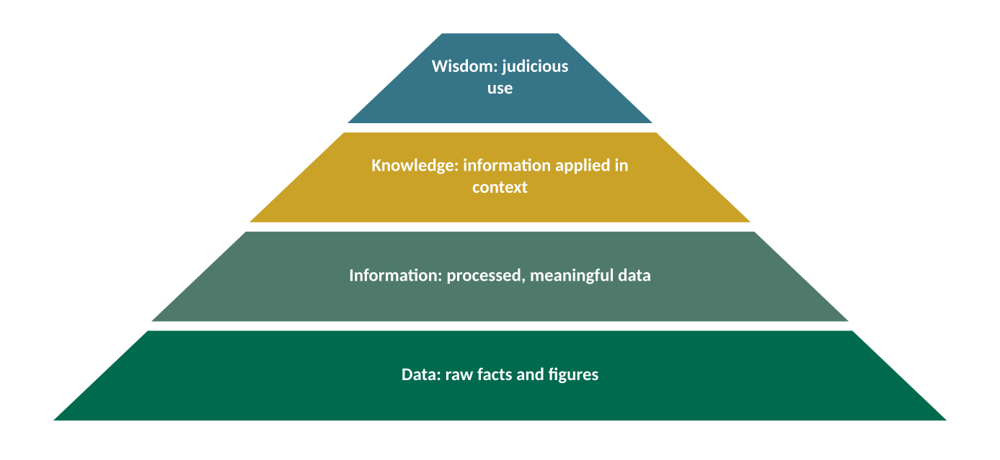
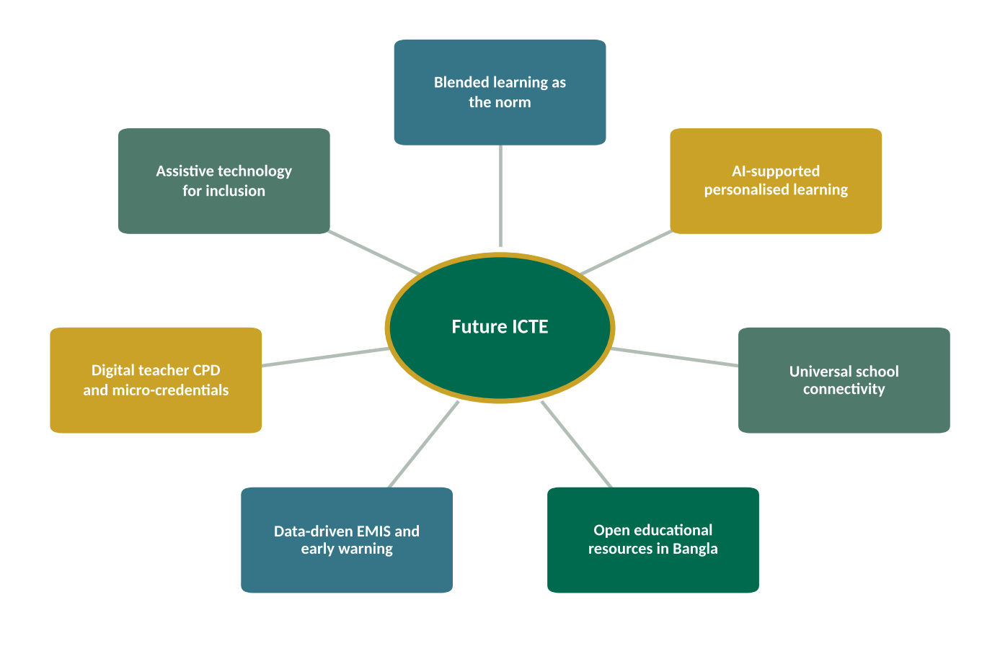
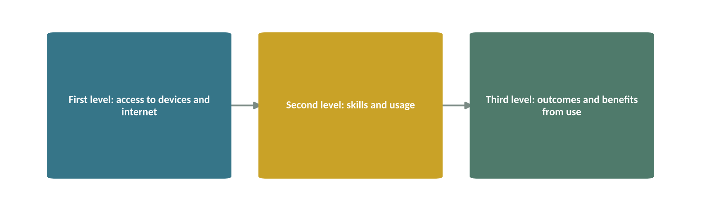
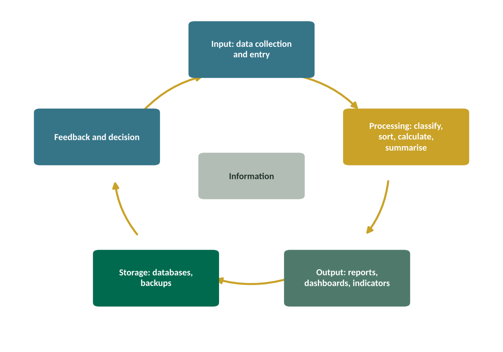
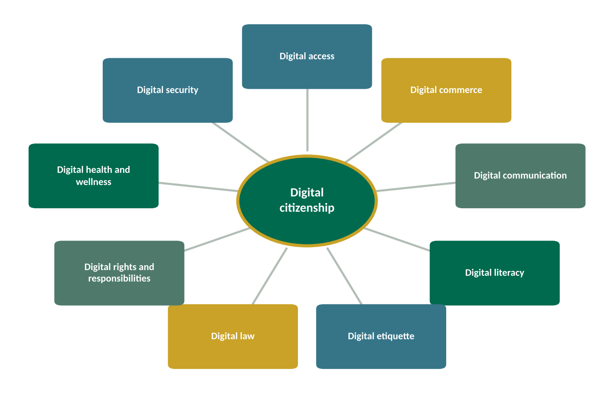

ED 503 শিক্ষায় তথ্য ও যোগাযোগ প্রযুক্তি
ICT-এর ধারণা ও মডেল, বাংলাদেশে শিক্ষায় ICT, ইন্টারনেট-সহায়ক শিখন, EMIS, ই-নৈতিকতা ও আইন, হাতে-কলমে ল্যাব নির্দেশিকাসহ
এটি ইংরেজি পাঠ নোটের বাংলা সংস্করণ। পাঠতালিকা ও তথ্যসূত্রের বইয়ের নাম মূল ভাষায় রাখা হয়েছে, যাতে লাইব্রেরিতে সহজে খুঁজে পান।
সূচিপত্র
এই কোর্স সম্পর্কে
শিক্ষায় তথ্য ও যোগাযোগ প্রযুক্তি (Information and Communication Technology in Education, ICTE) এখন আর কোনো ঐচ্ছিক সংযোজন নয়। কোভিড-১৯ (COVID-19)-জনিত বিদ্যালয় বন্ধ, স্মার্টফোনের বিস্তার, কৃত্রিম বুদ্ধিমত্তা (artificial intelligence) এবং জাতীয় ডিজিটাল কর্মসূচি শিক্ষক, প্রশাসক ও শিক্ষক-প্রশিক্ষকদের জন্য ডিজিটাল দক্ষতাকে (digital competence) একটি মৌলিক পেশাগত শর্তে পরিণত করেছে। তবে প্রযুক্তি তখনই শিখনের মান বাড়ায়, যখন তা সুষ্ঠু শিক্ষণবিজ্ঞান (pedagogy), ন্যায্য প্রবেশাধিকার ও নৈতিক ব্যবহারের দ্বারা পরিচালিত হয়।
ED 503 কোর্সে ICTE-এর ধারণা ও মডেলসমূহ পরিচিত করানো হয়েছে (ইউনিট ১), বৈশ্বিক চিত্রের আলোকে বাংলাদেশের ICTE নীতি ও চর্চা পর্যালোচনা করা হয়েছে (ইউনিট ২), ক্লাউড, ফ্লিপড ও উন্মুক্ত শিক্ষা উপকরণসহ ইন্টারনেট ও প্রযুক্তি-সহায়ক শিখন অনুসন্ধান করা হয়েছে (ইউনিট ৩), শিক্ষা ব্যবস্থাপনা তথ্য পদ্ধতি পরিচিত করানো হয়েছে (ইউনিট ৪) এবং নৈতিক ও আইনি বিষয়াবলি পরীক্ষা করা হয়েছে (ইউনিট ৫)। ইউনিট ৬-এ Google Classroom ও Forms, টিউটোরিয়াল তৈরি, গেমিফিকেশন ও অনলাইন কোর্স এবং প্রাথমিক ওয়েবসাইট তৈরির ল্যাবরেটরি নির্দেশিকা দেওয়া হয়েছে। যেহেতু ব্যবহারিক অংশে মোট নম্বরের ৪০% থাকে, তাই ল্যাব নির্দেশিকাগুলো এমনভাবে লেখা হয়েছে যাতে এগুলো থেকে সরাসরি শেখা ও অনুশীলন করা যায়।
কোর্সের উদ্দেশ্য
ICTE-এর ধারণা ও গুরুত্ব এবং উপাত্ত, তথ্য, যোগাযোগ ও শিক্ষার পারস্পরিক সম্পর্ক সম্পর্কে স্পষ্ট ধারণা গড়ে তোলা।
ICTE-সংশ্লিষ্ট সামাজিক, নৈতিক ও আইনি বিষয়াবলি অনুধাবন করা।
শিক্ষাদান, শিখন ও পেশাগত উন্নয়নে প্রযুক্তি ও ইন্টারনেট ব্যবহারের প্রতি ইতিবাচক দৃষ্টিভঙ্গি গড়ে তোলা।
ICT ব্যবহার করে পাঠভিত্তিক টিউটোরিয়াল ও ডিজিটাল মূল্যায়ন প্রস্তুতের দক্ষতা অর্জন করা।
বৈশ্বিক প্রেক্ষাপটের তুলনায় বাংলাদেশে ICTE-এর সুযোগ-সুবিধা ও সম্ভাবনাসমূহ চিহ্নিত করা।
কোনো প্রতিষ্ঠানের জন্য শিক্ষা ব্যবস্থাপনা তথ্য পদ্ধতি পরিকল্পনা ও পরিচালনা করা।
প্রতিটি ইউনিট এম.এড-এর অফিশিয়াল পাঠ্যসূচির ক্রম অনুসরণ করে। প্রথমে মূল আলোচনা পড়ুন, তারপর বক্সগুলো, এরপর পরীক্ষার প্রস্তুতি প্রশ্ন দিয়ে নিজেকে যাচাই করুন।
সবুজাভ নীল বক্স = সংজ্ঞা ও পড়ার কৌশল। সোনালি বক্স = অবশ্যই মনে রাখার বিষয় ও পরীক্ষার প্রস্তুতি। সবুজ বক্স = বাংলাদেশ প্রেক্ষাপট। ধূসর বক্স = মাস্টার্স পর্যায়ে প্রত্যাশিত সমালোচনামূলক দৃষ্টিভঙ্গি। হলুদাভ "ব্যবহারের আগে যাচাই করুন" বক্সে এমন নীতিগত তথ্য ও পরিসংখ্যান আছে যা বদলায়: পরীক্ষার আগে BANBEIS, শিক্ষা মন্ত্রণালয়, DPE, NCTB, UGC, UNESCO বা বিশ্বব্যাংকের সর্বশেষ তথ্যের সঙ্গে মিলিয়ে নিন।
শেষ অধ্যায়টি বিশ্ববিদ্যালয় পরীক্ষার ধরনে একটি প্রশ্নব্যাংক (উত্তরসহ MCQ, সংক্ষিপ্ত ও রচনামূলক প্রশ্ন), এরপর APA 7th রীতিতে পূর্ণ তথ্যসূত্র।
ইউনিট ১: বর্তমান যুগে ICT: একটি সার্বিক পর্যালোচনা
অধ্যায়ের সারসংক্ষেপ
ICT বোঝার সূচনা হয় উপাত্ত ও তথ্যের পার্থক্য দিয়ে। উপাত্ত হলো কাঁচা, অপ্রক্রিয়াজাত তথ্যকণা (নম্বর, উপস্থিতির টিক চিহ্ন, সংখ্যা)।
এই অধ্যায়ে যা আছে: উপাত্ত, তথ্য, জ্ঞান ও যোগাযোগ; IT, ICT ও ICTE; তথ্য সাক্ষরতা ও ডিজিটাল সাক্ষরতা; মিশ্র শিখন; TPACK মডেল; ই-শিক্ষার মৌলিক বিষয়; শিক্ষায় ICT সমন্বয়ের পরিধি ও চ্যালেঞ্জ; মোবাইল শিখন।
মূল পরিভাষা:
- তথ্যপ্রযুক্তি (Information Technology, IT): ইলেকট্রনিক উপাত্ত তৈরি, প্রক্রিয়াকরণ, সংরক্ষণ, সুরক্ষা ও বিনিময়ের জন্য কম্পিউটার, স্টোরেজ, নেটওয়ার্কিং ও অন্যান্য ভৌত যন্ত্র, অবকাঠামো ও প্রক্রিয়ার ব্যবহার।
- তথ্য ও যোগাযোগ প্রযুক্তি (Information and Communication Technology, ICT) (UNESCO): "তথ্য প্রেরণ, সংরক্ষণ, সৃষ্টি, ভাগাভাগি বা বিনিময়ের জন্য ব্যবহৃত বৈচিত্র্যময় প্রযুক্তিগত সরঞ্জাম ও সম্পদের সমষ্টি", যার মধ্যে রয়েছে কম্পিউটার, ইন্টারনেট, সরাসরি সম্প্রচার (রেডিও, টেলিভিশন), ধারণকৃত সম্প্রচার (পডকাস্ট, অডিও ও ভিডিও প্লেয়ার) এবং টেলিফোনি…
- শিক্ষায় ICT (ICT in Education, ICTE): শিক্ষাদান, শিখন, মূল্যায়ন, শিক্ষা ব্যবস্থাপনা এবং শিক্ষকদের পেশাগত উন্নয়নকে সহায়তা, সমৃদ্ধ ও রূপান্তরিত করতে ICT-এর ব্যবহার।
- তথ্য সাক্ষরতা (Information literacy) (ALA, 1989): "তথ্য-সাক্ষর হতে হলে একজন ব্যক্তিকে অবশ্যই বুঝতে পারতে হবে কখন তথ্যের প্রয়োজন, এবং প্রয়োজনীয় তথ্য খুঁজে বের করা, মূল্যায়ন করা ও কার্যকরভাবে ব্যবহার করার সামর্থ্য থাকতে হবে।"
মনে রাখার মূল বিষয়:
- TPACK-এর কেন্দ্রীয় বার্তা হলো, প্রযুক্তির সমন্বয় কোনো সাধারণ দক্ষতা নয়।
শিক্ষাক্রমে যা বলা হয়েছেইউনিট ১: বর্তমান যুগে ICT: একটি সার্বিক পর্যালোচনা · ৫ সংযোগ ঘণ্টা
এই ইউনিট শেষে শিক্ষার্থীরা যা পারবে
- একবিংশ শতাব্দীর প্রেক্ষাপটে ICT-এর মৌলিক ধারণাসমূহ ব্যাখ্যা করতে পারবেন
- বিভিন্ন বিষয়ে ICT-এর কার্যকর ব্যবহার বর্ণনা করতে পারবেন
- IT, ICT, ICTE-এর ধারণা, তথ্য সাক্ষরতা, মিশ্র শিখন, TPACK মডেলের ধারণা, ই-শিক্ষার মৌলিক বিষয়, শিক্ষায় ICT সমন্বয়ের পরিধি ও চ্যালেঞ্জ, মোবাইল শিখন
১.১ উপাত্ত, তথ্য, জ্ঞান ও যোগাযোগ
ICT বোঝার সূচনা হয় উপাত্ত (data) ও তথ্যের (information) পার্থক্য দিয়ে। উপাত্ত হলো কাঁচা, অপ্রক্রিয়াজাত তথ্যকণা (নম্বর, উপস্থিতির টিক চিহ্ন, সংখ্যা)। তথ্য হলো অর্থবহ রূপে প্রক্রিয়াজাত উপাত্ত (শ্রেণির গড় নম্বর, উপস্থিতির হার)। জ্ঞান (knowledge) হলো প্রেক্ষাপটে অনুধাবিত ও প্রয়োগকৃত তথ্য, এবং প্রজ্ঞা (wisdom) হলো জ্ঞানের বিচক্ষণ ব্যবহার।

চিত্র ১. DIKW স্তরক্রম (Ackoff, 1989 অনুসারে)
যোগাযোগ (communication) হলো কোনো মাধ্যমের সাহায্যে প্রেরক ও গ্রাহকের মধ্যে তথ্য ও অর্থ বিনিময়ের প্রক্রিয়া। শিক্ষা একটি কাঠামোবদ্ধ যোগাযোগ প্রক্রিয়া, যেখানে শিক্ষক ও শিক্ষার্থীরা জ্ঞান বিনিময়, নির্মাণ ও মূল্যায়ন করেন। তাই ICT এই চারটির সংযোগস্থলে অবস্থান করে: এটি উপাত্ত ধারণ করে, তা প্রক্রিয়াজাত করে তথ্যে রূপান্তরিত করে, সেই তথ্য যোগাযোগ করে এবং জ্ঞান নির্মাণে সহায়তা করে।
১.২ IT, ICT ও ICTE
তথ্যপ্রযুক্তি (Information Technology, IT): ইলেকট্রনিক উপাত্ত তৈরি, প্রক্রিয়াকরণ, সংরক্ষণ, সুরক্ষা ও বিনিময়ের জন্য কম্পিউটার, স্টোরেজ, নেটওয়ার্কিং ও অন্যান্য ভৌত যন্ত্র, অবকাঠামো ও প্রক্রিয়ার ব্যবহার।
তথ্য ও যোগাযোগ প্রযুক্তি (Information and Communication Technology, ICT) (UNESCO): "তথ্য প্রেরণ, সংরক্ষণ, সৃষ্টি, ভাগাভাগি বা বিনিময়ের জন্য ব্যবহৃত বৈচিত্র্যময় প্রযুক্তিগত সরঞ্জাম ও সম্পদের সমষ্টি", যার মধ্যে রয়েছে কম্পিউটার, ইন্টারনেট, সরাসরি সম্প্রচার (রেডিও, টেলিভিশন), ধারণকৃত সম্প্রচার (পডকাস্ট, অডিও ও ভিডিও প্লেয়ার) এবং টেলিফোনি (স্থির, মোবাইল, ভিডিও কনফারেন্সিং)।
শিক্ষায় ICT (ICT in Education, ICTE): শিক্ষাদান, শিখন, মূল্যায়ন, শিক্ষা ব্যবস্থাপনা এবং শিক্ষকদের পেশাগত উন্নয়নকে সহায়তা, সমৃদ্ধ ও রূপান্তরিত করতে ICT-এর ব্যবহার। ICTE-এর আওতায় ICT সম্পর্কে শিখন (বিষয় হিসেবে ICT) এবং ICT-এর সাহায্যে/মাধ্যমে শিখন (বিভিন্ন বিষয়ে সরঞ্জাম হিসেবে ICT), উভয়ই অন্তর্ভুক্ত।
| দিক | IT | ICT | ICTE |
|---|---|---|---|
| মূল লক্ষ্য | কম্পিউটিং ও উপাত্ত প্রক্রিয়াকরণ | তথ্য প্রক্রিয়াকরণ ও যোগাযোগ | ICT-এর শিক্ষাগত ব্যবহার |
| উপাদান | হার্ডওয়্যার, সফটওয়্যার, উপাত্ত, নেটওয়ার্ক | IT-এর সঙ্গে টেলিযোগাযোগ, সম্প্রচার মাধ্যম, ইন্টারনেট | ICT-এর সঙ্গে শিক্ষণবিজ্ঞান, শিক্ষাক্রম, ব্যবস্থাপনা |
| সাধারণ ব্যবহারকারী | IT পেশাজীবী, প্রতিষ্ঠান | সবাই | শিক্ষক, শিক্ষার্থী, প্রশাসক |
| উদাহরণ | ডেটাবেজ সার্ভার | মোবাইল ফোন, ইন্টারনেট, টিভি | অনলাইন ক্লাস, EMIS, ডিজিটাল কনটেন্ট |
সারণি ১. IT, ICT ও ICTE-এর তুলনা
১.৩ তথ্য সাক্ষরতা ও ডিজিটাল সাক্ষরতা
তথ্য সাক্ষরতা (Information literacy) (ALA, 1989): "তথ্য-সাক্ষর হতে হলে একজন ব্যক্তিকে অবশ্যই বুঝতে পারতে হবে কখন তথ্যের প্রয়োজন, এবং প্রয়োজনীয় তথ্য খুঁজে বের করা, মূল্যায়ন করা ও কার্যকরভাবে ব্যবহার করার সামর্থ্য থাকতে হবে।"
ACRL-এর Framework for Information Literacy for Higher Education (2016)-এ ছয়টি কাঠামো (frame) উপস্থাপন করা হয়েছে: কর্তৃত্ব নির্মিত ও প্রেক্ষাপটনির্ভর; প্রক্রিয়া হিসেবে তথ্য সৃষ্টি; তথ্যের মূল্য আছে; অনুসন্ধান হিসেবে গবেষণা; সংলাপ হিসেবে পাণ্ডিত্য; এবং কৌশলগত অন্বেষণ হিসেবে অনুসন্ধান।
ডিজিটাল সাক্ষরতা (digital literacy) আরও বিস্তৃত: তথ্য খোঁজা, মূল্যায়ন, সৃষ্টি ও যোগাযোগের জন্য ডিজিটাল প্রযুক্তি ব্যবহারের সামর্থ্য, যার জন্য জ্ঞানীয় ও কারিগরি উভয় দক্ষতা প্রয়োজন। ইউরোপীয় DigComp 2.2 কাঠামো (২০২২) পাঁচটি ক্ষেত্র নির্ধারণ করেছে: তথ্য ও উপাত্ত সাক্ষরতা; যোগাযোগ ও সহযোগিতা; ডিজিটাল কনটেন্ট সৃষ্টি; নিরাপত্তা; এবং সমস্যা সমাধান। UNESCO-এর Digital Literacy Global Framework (২০১৮) এর সঙ্গে যন্ত্র ও সফটওয়্যার পরিচালনা এবং পেশাসংশ্লিষ্ট দক্ষতা যুক্ত করেছে।

চিত্র ২. DigComp 2.2-এর পাঁচটি দক্ষতা ক্ষেত্র
১.৪ মিশ্র শিখন
মিশ্র শিখন (Blended learning) (Garrison & Kanuka, 2004): "শ্রেণিকক্ষের মুখোমুখি শিখন অভিজ্ঞতার সঙ্গে অনলাইন শিখন অভিজ্ঞতার সুচিন্তিত সমন্বয়।"
| মডেল | বিবরণ | উদাহরণ |
|---|---|---|
| স্টেশন রোটেশন | শিক্ষার্থীরা বিভিন্ন স্টেশনে পালাক্রমে কাজ করে, যার অন্তত একটি অনলাইন | ষষ্ঠ শ্রেণির বিজ্ঞান ক্লাসে দলগুলো পরীক্ষণ, শিক্ষক-পরিচালিত এবং ট্যাবলেটে কুইজ স্টেশনের মধ্যে পালাক্রমে ঘোরে |
| ল্যাব রোটেশন | অনলাইন অংশের জন্য পালাক্রমে কম্পিউটার ল্যাবে যাওয়া | অনুশীলনের জন্য সাপ্তাহিক ICT ল্যাব সেশন |
| ফ্লিপড ক্লাসরুম | বিষয়বস্তু বাড়িতে অনলাইনে শেখা হয়; ক্লাসের সময় অনুশীলন ও আলোচনার জন্য ব্যবহৃত হয় | শিক্ষার্থীরা সালোকসংশ্লেষণ বিষয়ে ১০ মিনিটের একটি ভিডিও দেখে; ক্লাসে পরীক্ষণ করা হয় |
| ব্যক্তিগত রোটেশন | বিভিন্ন মাধ্যমে ব্যক্তিভিত্তিক সময়সূচি | অভিযোজিত (adaptive) সফটওয়্যার প্রত্যেক শিক্ষার্থীর পথ নির্ধারণ করে |
| ফ্লেক্স | অনলাইনই মূল ভিত্তি; শিক্ষকেরা নমনীয়ভাবে মুখোমুখি সহায়তা দেন | ঐচ্ছিক টিউটোরিয়ালসহ অনলাইন ডিগ্রি |
| আ লা কার্ত (A la carte) | শিক্ষার্থীরা কিছু কোর্স সম্পূর্ণ অনলাইনে গ্রহণ করে | একজন বিশ্ববিদ্যালয় শিক্ষার্থী ক্রেডিটের জন্য একটি MOOC গ্রহণ করেন |
| সমৃদ্ধ ভার্চুয়াল | মূলত অনলাইন, মাঝে মাঝে বাধ্যতামূলক মুখোমুখি সেশনসহ | উন্মুক্ত বিশ্ববিদ্যালয়ের টিউটোরিয়াল (BOU) |
সারণি ২. মিশ্র শিখনের মডেলসমূহ (Staker & Horn, 2012)
১.৫ TPACK মডেল
মিশরা ও কোয়েলার (Mishra and Koehler, 2006) শুলম্যানের (Shulman, 1986) বিষয়ভিত্তিক শিক্ষণজ্ঞানের (pedagogical content knowledge, PCK) ওপর ভিত্তি করে প্রযুক্তিগত বিষয়ভিত্তিক শিক্ষণজ্ঞান (Technological Pedagogical Content Knowledge, TPACK) প্রস্তাব করেন: কার্যকর প্রযুক্তি সমন্বয়ের জন্য শিক্ষকদের তিনটি প্রধান জ্ঞানভিত্তির জটিল পারস্পরিক ক্রিয়া বুঝতে হয়।

চিত্র ৩. TPACK কাঠামো (Mishra & Koehler, 2006)
| ক্ষেত্র | অর্থ | উদাহরণ (অষ্টম শ্রেণির জ্যামিতি) |
|---|---|---|
| CK | বিষয়বস্তুর জ্ঞান | ত্রিভুজের ধর্মাবলি |
| PK | শিক্ষাদান ও শিখন পদ্ধতির জ্ঞান | অনুসন্ধানমূলক শিখন, প্রশ্ন করা |
| TK | প্রযুক্তির জ্ঞান | GeoGebra ব্যবহার |
| PCK | নির্দিষ্ট বিষয়বস্তু কার্যকরভাবে শেখানো | কাগজ ভাঁজ করে কোণের সমষ্টি আবিষ্কার করা |
| TCK | প্রযুক্তি কীভাবে বিষয়বস্তুকে উপস্থাপন করে | গতিশীল জ্যামিতিতে দেখা যায়, ত্রিভুজ বদলালেও কোণের সমষ্টি ১৮০° থাকে |
| TPK | প্রযুক্তি কীভাবে শিক্ষাদানকে বদলে দেয় | গঠনকালীন মূল্যায়নের জন্য অনলাইন জরিপ (poll) ব্যবহার |
| TPACK | উপযুক্ত শিক্ষণপদ্ধতিসহ নির্দিষ্ট বিষয়বস্তু শেখাতে প্রযুক্তি ব্যবহারের সমন্বিত জ্ঞান | শিক্ষার্থীরা GeoGebra-তে ত্রিভুজ অন্বেষণ করে, অনুমান গঠন করে, তারপর দলে যুক্তি দিয়ে তা প্রতিপাদন করে |
সারণি ৩. TPACK-এর সাতটি জ্ঞানক্ষেত্র
TPACK-এর কেন্দ্রীয় বার্তা হলো, প্রযুক্তির সমন্বয় কোনো সাধারণ দক্ষতা নয়। যে শিক্ষক PowerPoint চালাতে পারেন (TK), তিনি স্বয়ংক্রিয়ভাবে এর সাহায্যে গণিত আরও ভালোভাবে শেখাতে পারেন না। চিত্রের চারপাশের বৃত্তটি প্রেক্ষাপট (বিদ্যালয়, শিক্ষার্থী, সংস্কৃতি) নির্দেশ করে, যাকে মিশরা (Mishra, 2019) নতুন নাম দিয়েছেন প্রেক্ষাপটগত জ্ঞান (contextual knowledge, XK)।
সমন্বয়ের অন্যান্য মডেল
| মডেল | স্তর / উপাদান | ব্যবহার |
|---|---|---|
| SAMR (Puentedura, 2006) | প্রতিস্থাপন (Substitution), বর্ধন (Augmentation), পরিবর্তন (Modification), পুনঃসংজ্ঞায়ন (Redefinition) | প্রযুক্তি কোনো কাজকে কতটা রূপান্তরিত করে তা বিচার করা |
| RAT (Hughes) | প্রতিস্থাপন (Replacement), বিবর্ধন (Amplification), রূপান্তর (Transformation) | SAMR-এর অনুরূপ |
| ICT-CFT (UNESCO, 2018) | ছয়টি দিক জুড়ে তিনটি স্তর: জ্ঞান অর্জন, জ্ঞান গভীরকরণ, জ্ঞান সৃষ্টি | শিক্ষকের যোগ্যতার মানদণ্ড |
| TAM (Davis, 1989) | অনুভূত উপযোগিতা ও অনুভূত ব্যবহার-সহজতা প্রযুক্তি গ্রহণের পূর্বাভাস দেয় | শিক্ষকদের প্রযুক্তি গ্রহণ বিষয়ক গবেষণা |
| রজার্সের উদ্ভাবন বিস্তার তত্ত্ব (Rogers's diffusion of innovations, 1962) | উদ্ভাবক, প্রাথমিক গ্রহণকারী, প্রাথমিক সংখ্যাগরিষ্ঠ, বিলম্বিত সংখ্যাগরিষ্ঠ, পশ্চাৎপদ | ICT প্রবর্তনের পরিকল্পনা |
সারণি ৪. প্রযুক্তি সমন্বয়ের মডেলসমূহ

চিত্র ৪. SAMR মডেল (Puentedura, 2006)
১.৬ ই-শিক্ষার মৌলিক বিষয়
ই-শিক্ষা (e-education বা e-learning) হলো ICT-এর মাধ্যমে সহজীকৃত ও সহায়তাপ্রাপ্ত শিখন। মূল ধারণাসমূহ:
সমকালিক (synchronous; তাৎক্ষণিক: Zoom/Meet-এ সরাসরি ক্লাস) বনাম অসমকালিক (asynchronous; যেকোনো সময়: ধারণকৃত ভিডিও, আলোচনা ফোরাম)।
শিখন ব্যবস্থাপনা পদ্ধতি (Learning Management System, LMS): শিখন পরিবেশন, অনুসরণ ও ব্যবস্থাপনার সফটওয়্যার (Moodle, Google Classroom, Canvas, Blackboard)।
ভার্চুয়াল শিখন পরিবেশ (Virtual Learning Environment, VLE) এবং বৃহৎ উন্মুক্ত অনলাইন কোর্স (Massive Open Online Courses, MOOCs)।
ই-কনটেন্ট: লেখা, অডিও, ভিডিও, সিমুলেশন, মিথস্ক্রিয়ামূলক মডিউল।
ই-মূল্যায়ন: অনলাইন কুইজ, ই-পোর্টফোলিও, স্বয়ংক্রিয় ফলাবর্তন (feedback)।
শিখন বিশ্লেষণ (Learning analytics): শিখন বোঝা ও তা সর্বোত্তম করার উদ্দেশ্যে শিক্ষার্থী-সংক্রান্ত উপাত্তের পরিমাপ ও বিশ্লেষণ।
১.৭ শিক্ষায় ICT সমন্বয়ের পরিধি ও চ্যালেঞ্জ
| ক্ষেত্র | প্রয়োগক্ষেত্র |
|---|---|
| শিক্ষাদান ও শিখন | মাল্টিমিডিয়া উপস্থাপনা, সিমুলেশন, ভার্চুয়াল ল্যাব, অনলাইন সহযোগিতা, অভিযোজিত শিখন, AI টিউটর |
| মূল্যায়ন | অনলাইন অভীক্ষা, প্রশ্নব্যাংক, কুম্ভীলকবৃত্তি শনাক্তকরণ, ই-পোর্টফোলিও, শিখন বিশ্লেষণ |
| প্রশাসন | EMIS, ভর্তি, সময়সূচি, ফল প্রক্রিয়াকরণ, অর্থ, মানবসম্পদ |
| শিক্ষক উন্নয়ন | অনলাইন নিরবচ্ছিন্ন পেশাগত উন্নয়ন (CPD), MOOC, চর্চাভিত্তিক সম্প্রদায় (communities of practice), ভিডিওভিত্তিক কোচিং |
| প্রবেশাধিকার ও একীভূতকরণ | দূরশিক্ষণ, সহায়ক প্রযুক্তি (স্ক্রিন রিডার, টেক্সট-টু-স্পিচ), ইশারা ভাষার ভিডিও |
| গবেষণা | ডেটাবেজ, রেফারেন্স ব্যবস্থাপক, পরিসংখ্যান সফটওয়্যার, উন্মুক্ত প্রবেশাধিকার (open access) |
| যোগাযোগ | বিদ্যালয়ের ওয়েবসাইট, অভিভাবকদের কাছে SMS, সামাজিক মাধ্যম |
সারণি ৫. শিক্ষায় ICT-এর পরিধি
| প্রকার | বাধাসমূহ |
|---|---|
| প্রথম স্তরের (বাহ্যিক) | যন্ত্র, বিদ্যুৎ, ইন্টারনেট, কারিগরি সহায়তা, সময়, অর্থায়ন ও বাংলা ভাষায় কনটেন্টের অভাব |
| দ্বিতীয় স্তরের (অভ্যন্তরীণ) | শিক্ষকদের বিশ্বাস, মনোভাব, আত্মবিশ্বাস, পরিবর্তনের প্রতি প্রতিরোধ, শিক্ষণবিজ্ঞানগত জ্ঞান |
| ব্যবস্থাগত | পরীক্ষানির্ভর শিক্ষাক্রম, নীতির সামঞ্জস্যহীনতা, দুর্বল পরিবীক্ষণ, রক্ষণাবেক্ষণ ও প্রতিস্থাপন ব্যয় |
| ন্যায্যতা | আয়, জেন্ডার, অবস্থান ও প্রতিবন্ধিতাভেদে ডিজিটাল বৈষম্য (digital divide) |
| নিরাপত্তা ও নৈতিকতা | সাইবার উৎপীড়ন (cyberbullying), গোপনীয়তা, ভুল তথ্য, আসক্তি |
সারণি ৬. ICT সমন্বয়ের চ্যালেঞ্জ (প্রথম ও দ্বিতীয় স্তরের প্রতিবন্ধকতা, Ertmer, 1999)
১.৮ মোবাইল শিখন
মোবাইল শিখন (Mobile learning) (UNESCO, 2013): "মোবাইল শিখন বলতে যেকোনো সময় ও যেকোনো স্থানে শিখন সম্ভব করার জন্য এককভাবে বা অন্যান্য ICT-এর সঙ্গে মিলিয়ে মোবাইল প্রযুক্তির ব্যবহারকে বোঝায়।"
UNESCO-এর Policy Guidelines for Mobile Learning (2013)-এ বিভিন্ন সুবিধার উল্লেখ আছে, যেমন: শিক্ষার বিস্তার ও ন্যায্যতা বৃদ্ধি, ব্যক্তিভিত্তিক শিখন সহজ করা, তাৎক্ষণিক ফলাবর্তন প্রদান, যেকোনো সময়-যেকোনো স্থানে শিখন সম্ভব করা, প্রতিবেশনির্ভর শিখনে (situated learning) সহায়তা এবং আনুষ্ঠানিক ও অনানুষ্ঠানিক শিখনের মধ্যে সেতুবন্ধ রচনা। চ্যালেঞ্জগুলোর মধ্যে রয়েছে ছোট পর্দা, মনোযোগবিচ্যুতি, ডেটার খরচ, গোপনীয়তা এবং অসম প্রবেশাধিকার, বিশেষত মেয়েদের ক্ষেত্রে।
বাংলাদেশে মোবাইল ফোনের বিস্তার অত্যন্ত বেশি এবং মোবাইল ইন্টারনেটই ইন্টারনেট ব্যবহারের প্রধান মাধ্যম। কোভিড-১৯ চলাকালে মোবাইলভিত্তিক শিখন (মুক্তপাঠ, 10 Minute School, Facebook Live ক্লাস এবং ৩৩৩ নম্বরে কলভিত্তিক সহায়তা) এবং ফিচার ফোনভিত্তিক ইন্টারঅ্যাকটিভ ভয়েস রেসপন্স টিভি ও রেডিওর পাঠের পরিপূরক হিসেবে কাজ করেছে।
সম্ভাব্য প্রশ্ন: "IT, ICT ও ICTE-এর পার্থক্য নির্ণয় করুন।" "TPACK কী? উদাহরণসহ এর সাতটি উপাদান ব্যাখ্যা করুন।" "SAMR মডেল আলোচনা করুন।" "মিশ্র শিখনের মডেলসমূহ ব্যাখ্যা করুন।" "ICT সমন্বয়ের প্রথম ও দ্বিতীয় স্তরের প্রতিবন্ধকতাগুলো কী কী?"
ইউনিট ২: বাংলাদেশে ICTE
অধ্যায়ের সারসংক্ষেপ
বিশ্বব্যাপী ICTE কয়েকটি পর্যায় অতিক্রম করেছে: কম্পিউটার-সহায়ক শিক্ষণ (১৯৬০ থেকে ১৯৮০-এর দশক), মাল্টিমিডিয়া ও ইন্টারনেট (১৯৯০-এর দশক), Web 2.0 ও একজনে-একটি যন্ত্র কর্মসূচি (২০০০-এর দশক, যেমন One Laptop Per Child), মোবাইল ও ক্লাউড শিখন (২০১০-এর দশক) এবং জরুরি দূরশিক্ষণ ও AI (২০২০-এর দশক)। UNESCO-এর GEM Report 2023, Technology in Education: A Tool on Whose Terms? , সতর্ক করে যে…
এই অধ্যায়ে যা আছে: বৈশ্বিক ও স্থানীয় প্রেক্ষাপটে ICTE; শিক্ষায় ICT সমন্বয় বিষয়ক জাতীয় নীতিমালা পর্যালোচনা; সরকার ও এনজিওসমূহের ICTE-এর বর্তমান চর্চা; ICTE শিক্ষাক্রম ও শিক্ষণের সম্পর্ক; বাংলাদেশে ICTE-এর ভবিষ্যৎ ধরন।
শিক্ষাক্রমে যা বলা হয়েছেইউনিট ২: বাংলাদেশে ICTE · ৫ সংযোগ ঘণ্টা
এই ইউনিট শেষে শিক্ষার্থীরা যা পারবে
- ICTE-এর স্থানীয় ও বৈশ্বিক প্রেক্ষাপট বিশ্লেষণ করতে পারবেন
- ICTE শিক্ষাক্রম ও শিক্ষণের মধ্যকার সম্পর্ক সমন্বয় করতে পারবেন
- স্থানীয় ও বৈশ্বিক প্রেক্ষাপটে ICTE, শিক্ষায় ICT সমন্বয় বিষয়ক জাতীয় নীতিমালা পর্যালোচনা, বাংলাদেশ সরকার (GoB) ও এনজিওসমূহের ICTE-এর বর্তমান চর্চা, বাংলাদেশে ICTE-এর ভবিষ্যৎ ধরন
২.১ বৈশ্বিক ও স্থানীয় প্রেক্ষাপটে ICTE
বিশ্বব্যাপী ICTE কয়েকটি পর্যায় অতিক্রম করেছে: কম্পিউটার-সহায়ক শিক্ষণ (computer-assisted instruction; ১৯৬০ থেকে ১৯৮০-এর দশক), মাল্টিমিডিয়া ও ইন্টারনেট (১৯৯০-এর দশক), Web 2.0 ও একজনে-একটি যন্ত্র কর্মসূচি (২০০০-এর দশক, যেমন One Laptop Per Child), মোবাইল ও ক্লাউড শিখন (২০১০-এর দশক) এবং জরুরি দূরশিক্ষণ (emergency remote teaching) ও AI (২০২০-এর দশক)। UNESCO-এর GEM Report 2023, Technology in Education: A Tool on Whose Terms?, সতর্ক করে যে প্রযুক্তির বাড়তি মূল্য সম্পর্কে প্রমাণ সীমিত ও প্রেক্ষাপটনির্ভর, প্রযুক্তি কেবল সেখানেই ব্যবহার করা উচিত যেখানে তা শিখনের উন্নতি ঘটায়, এবং প্রতি চারটি দেশের একটি বিদ্যালয়ে স্মার্টফোন নিষিদ্ধ করেছিল।
| দিক | বৈশ্বিক প্রবণতা | বাংলাদেশের পরিস্থিতি (নির্দেশক) |
|---|---|---|
| অবকাঠামো | উচ্চ আয়ের দেশগুলোতে প্রায় সর্বজনীন বিদ্যালয় সংযোগ; প্রতিটি বিদ্যালয়কে সংযুক্ত করতে Giga উদ্যোগ (UNICEF-ITU) | অধিকাংশ বিদ্যালয়ে বিদ্যুৎ আছে; সংযোগ অসম; অনেক মাধ্যমিক বিদ্যালয়ে মাল্টিমিডিয়া শ্রেণিকক্ষ |
| নীতি | জাতীয় ডিজিটাল শিক্ষা কৌশল; AI বিষয়ক নির্দেশনা (UNESCO 2023) | ICT Policy 2018; ICT in Education Master Plan; স্মার্ট বাংলাদেশ ২০৪১ |
| শিক্ষকের যোগ্যতা | UNESCO ICT-CFT; DigCompEdu (EU) | a2i, জাতীয় শিক্ষা ব্যবস্থাপনা একাডেমি (NAEM), TTC ও শিক্ষা মন্ত্রণালয়ের (MoE) প্রকল্পের মাধ্যমে শিক্ষকদের ICT প্রশিক্ষণ |
| বিষয়বস্তু | OER, MOOC, অভিযোজিত প্ল্যাটফর্ম | শিক্ষক বাতায়ন, মুক্তপাঠ, কিশোর বাতায়ন, ডিজিটাল পাঠ্যপুস্তক (NCTB ই-বুক) |
| মূল্যায়ন | কম্পিউটারভিত্তিক পরীক্ষা, বিশ্লেষণ | অনলাইনে ভর্তি, ফল প্রকাশ; সীমিত CBT |
| ন্যায্যতা | বিশ্বব্যাপী ডিজিটাল বৈষম্য রয়ে গেছে | শহর-গ্রাম, জেন্ডার ও আয়ভিত্তিক বৈষম্য; কোভিড-১৯ এসব ফাঁক উন্মোচন করেছে |
সারণি ৭. ICTE বিষয়ে বৈশ্বিক ও স্থানীয় প্রেক্ষাপট
মাল্টিমিডিয়া শ্রেণিকক্ষ, ডিজিটাল ল্যাব ও সংযোগ-সংক্রান্ত পরিসংখ্যান প্রতিবছর বদলায়; সাম্প্রতিক সংখ্যার জন্য a2i, DSHE ও BANBEIS যাচাই করুন।
২.২ শিক্ষায় ICT সমন্বয় বিষয়ক জাতীয় নীতিমালা পর্যালোচনা
| নীতি / উদ্যোগ | বছর | ICTE-সংক্রান্ত বিধান |
|---|---|---|
| জাতীয় ICT নীতি | 2002, 2009, 2015, 2018 | কৌশলগত বিষয় হিসেবে শিক্ষায় ICT: ICT সাক্ষরতা, ডিজিটাল কনটেন্ট, শিক্ষক প্রশিক্ষণ, মাল্টিমিডিয়া শ্রেণিকক্ষ, পরীক্ষা ও প্রশাসনে ICT |
| ডিজিটাল বাংলাদেশ রূপকল্প | 2008/2009 | চারটি স্তম্ভ: মানবসম্পদ উন্নয়ন, নাগরিকদের সংযুক্ত করা, ডিজিটাল সরকার, ব্যবসায় ICT; প্রথম স্তম্ভে শিক্ষা কেন্দ্রীয় অবস্থানে |
| জাতীয় শিক্ষানীতি | 2010 | মাধ্যমিক স্তরে ICT বাধ্যতামূলক বিষয়; শিক্ষক প্রশিক্ষণে ICT; কম্পিউটার ল্যাব; ডিজিটাল কনটেন্ট |
| শিক্ষায় ICT মহাপরিকল্পনা (ICT in Education Master Plan) | ২০১২ থেকে ২০২১ | আটটি উপাদান, যার মধ্যে রয়েছে ICT-ভিত্তিক শিখন-শেখানো, শিক্ষক উন্নয়ন, ডিজিটাল কনটেন্ট, মূল্যায়ন, অবকাঠামো, EMIS, পরিবীক্ষণ |
| ডিজিটাল নিরাপত্তা আইন | 2018 | ডিজিটাল কনটেন্ট নিয়ন্ত্রণ (সাইবার নিরাপত্তা আইন ২০২৩ দ্বারা প্রতিস্থাপিত) |
| মিশ্র শিক্ষা মহাপরিকল্পনা / মিশ্র শিখন নীতি | ২০২২ থেকে পরবর্তী | সব স্তরে মিশ্র শিক্ষার জন্য কোভিড-পরবর্তী কৌশল (শিক্ষা মন্ত্রণালয়ের খসড়া) |
| স্মার্ট বাংলাদেশ রূপকল্প | ২০২২ থেকে ২০৪১ | স্মার্ট নাগরিক, স্মার্ট সরকার, স্মার্ট অর্থনীতি, স্মার্ট সমাজ: ডিজিটাল দক্ষতা ও AI |
| কৃত্রিম বুদ্ধিমত্তা বিষয়ক জাতীয় কৌশল | ২০১৯ (২০২৪ সালের সংশোধিত খসড়া) | AI শিক্ষা ও গবেষণা |
সারণি ৮. ICTE-সংশ্লিষ্ট প্রধান জাতীয় নীতি ও উদ্যোগসমূহ
মিশ্র শিক্ষা মহাপরিকল্পনার অবস্থা, AI কৌশলের সংশোধন এবং ২০২৪-পরবর্তী সময়ে ডিজিটাল/স্মার্ট বাংলাদেশ কর্মসূচির কোনো নাম পরিবর্তন বা সংশোধন হয়েছে কি না, তা ICT বিভাগ ও শিক্ষা মন্ত্রণালয় থেকে যাচাই করে নেওয়া উচিত।
২.৩ সরকার ও এনজিওসমূহের ICTE-এর বর্তমান চর্চা
সরকারি উদ্যোগ
a2i (Aspire to Innovate), পূর্বনাম Access to Information, UNDP-এর সহায়তায় ICT বিভাগ ও মন্ত্রিপরিষদ বিভাগের অধীনে পরিচালিত: মাল্টিমিডিয়া শ্রেণিকক্ষ, শিক্ষক-প্রণীত কনটেন্ট তৈরি ও ডিজিটাল সেবা এগিয়ে নিয়েছে।
মাল্টিমিডিয়া শ্রেণিকক্ষ (Multimedia Classrooms, MMC): মাধ্যমিক ও প্রাথমিক বিদ্যালয়ে ল্যাপটপ, প্রজেক্টর, ইন্টারনেট মডেম ও স্পিকার সরবরাহ করা হয়েছে; শিক্ষকদের ডিজিটাল কনটেন্ট তৈরির প্রশিক্ষণ দেওয়া হয়েছে।
শিক্ষক বাতায়ন (Teachers' Portal): একটি অনলাইন প্ল্যাটফর্ম, যেখানে শিক্ষকেরা ডিজিটাল কনটেন্ট ভাগাভাগি ও মূল্যায়ন করেন; এটি আন্তর্জাতিকভাবে স্বীকৃত।
মুক্তপাঠ (Muktopaath): বিনা মূল্যে অনলাইন কোর্সের একটি বাংলা ই-লার্নিং প্ল্যাটফর্ম, যাতে শিক্ষকদের পেশাগত উন্নয়ন ও দক্ষতাভিত্তিক কোর্স রয়েছে।
কিশোর বাতায়ন (Konnect): কিশোর-কিশোরীদের জন্য একটি শিক্ষামূলক বিনোদন (edutainment) পোর্টাল।
শেখ রাসেল ডিজিটাল ল্যাব ও স্কুল অব ফিউচার (ICT বিভাগ): মাধ্যমিক প্রতিষ্ঠানে কম্পিউটার ল্যাব; ২০২৪-এর পর কয়েকটির নাম পরিবর্তন করা হয়েছে।
মাধ্যমিক ও উচ্চমাধ্যমিক স্তরে বাধ্যতামূলক বিষয় হিসেবে ICT; কিছু বিদ্যালয়ে ICT শিক্ষক নিয়োগ করা হয়েছে।
কোভিড-১৯ চলাকালে সংসদ টিভির "আমার ঘরে আমার স্কুল" এবং বাংলাদেশ বেতারের পাঠ।
বাংলাদেশ উন্মুক্ত বিশ্ববিদ্যালয় (BOU): টিভি, রেডিও ও অনলাইন দূরশিক্ষণ কার্যক্রম; BOU-এর ই-লার্নিং প্ল্যাটফর্ম।
অনলাইনে ভর্তি ও ফল: কলেজে (একাদশ শ্রেণি) অনলাইনে ভর্তি; SMS ও ওয়েবের মাধ্যমে ফল প্রকাশ।
BdREN: বিশ্ববিদ্যালয়গুলোকে সংযুক্তকারী বাংলাদেশ রিসার্চ অ্যান্ড এডুকেশন নেটওয়ার্ক।
এনজিও ও বেসরকারি উদ্যোগ
BRAC: BRAC IED, ডিজিটাল সাক্ষরতা, ব্র্যাক স্কুলে কম্পিউটার-সহায়ক শিখন; কোভিড-১৯ চলাকালে অনলাইন শিখন।
JAAGO Foundation: শহরের শিক্ষকদের গ্রামের শ্রেণিকক্ষের সঙ্গে সংযুক্তকারী অনলাইন বিদ্যালয়।
10 Minute School: বিনা মূল্যের ও সশুল্ক কনটেন্টসহ একটি বৃহৎ বেসরকারি অনলাইন শিখন প্ল্যাটফর্ম।
D.Net, Save the Children, UNICEF: ডিজিটাল কনটেন্ট, মোবাইল শিখন, রোহিঙ্গা শিখন কেন্দ্র।
টেলিকম অপারেটর: কোভিড-১৯ চলাকালে বিনা ডেটা খরচে (zero-rated) শিক্ষামূলক কনটেন্ট।
সরকারি ল্যাব ও পোর্টালের নাম ও অবস্থা (যেমন শেখ রাসেল ডিজিটাল ল্যাব, কিশোর বাতায়ন) আগস্ট ২০২৪-এর পর পরিবর্তিত হয়ে থাকতে পারে; পরীক্ষার আগে বর্তমান নামগুলো নিশ্চিত হয়ে নিন।
বাংলাদেশের মাল্টিমিডিয়া শ্রেণিকক্ষ বিষয়ক গবেষণায় দেখা গেছে, এগুলো শিক্ষার্থীদের মনোযোগ ও শিক্ষকদের প্রেষণা বাড়িয়েছে, তবে SAMR-এর ভাষায় প্রায়ই তা কেবল প্রতিস্থাপন (বোর্ডের বদলে স্লাইড) পর্যায়ে থেকে গেছে; মিথস্ক্রিয়ামূলক বা শিক্ষার্থীকেন্দ্রিক ব্যবহার ছিল সীমিত, যন্ত্রপাতি প্রায়ই বিকল হতো এবং কনটেন্ট প্রস্তুতের জন্য শিক্ষকেরা পর্যাপ্ত সময় পেতেন না।
২.৪ ICTE শিক্ষাক্রম ও শিক্ষণের সম্পর্ক
শিক্ষাক্রমে ICT দুইভাবে উপস্থিত: একটি বিষয় হিসেবে (ষষ্ঠ থেকে দ্বাদশ শ্রেণির ICT শিক্ষাক্রম, ২০২১ রূপরেখায় ডিজিটাল প্রযুক্তি) এবং একটি আন্তঃবিষয়ক সরঞ্জাম হিসেবে। শিক্ষাক্রম ও শিক্ষণের সমন্বয়ের জন্য প্রয়োজন:
শিক্ষাক্রমের উদ্দেশ্য, ICT সরঞ্জাম ও মূল্যায়নের মধ্যে সামঞ্জস্য বিধান (গঠনমূলক সামঞ্জস্য বা constructive alignment, Biggs)।
শিক্ষক সহায়িকা, যা নির্দিষ্ট বিষয়বস্তুর জন্য প্রযুক্তি কীভাবে ব্যবহার করতে হয় তা দেখায় (TPACK)।
সময়সূচিতে ল্যাবের কাজের জন্য সময় বরাদ্দ।
এমন মূল্যায়ন, যা কেবল লিখিত পরীক্ষা নয়, ICT-নির্ভর দক্ষতাকেও (প্রকল্প, পোর্টফোলিও) মূল্য দেয়।
কেবল যন্ত্র চালনায় নয়, শিক্ষণবিজ্ঞানেও পেশাগত উন্নয়ন।
২.৫ বাংলাদেশে ICTE-এর ভবিষ্যৎ ধরন

চিত্র ৫. বাংলাদেশে ICTE-এর ভবিষ্যৎ ধরন
প্রযুক্তিনির্ভর সংস্কার প্রায়ই ব্যর্থ হয় যখন তা হার্ডওয়্যারকেন্দ্রিক হয় (আগে যন্ত্র কেনা, শিক্ষণবিজ্ঞান নিয়ে পরে ভাবা), রক্ষণাবেক্ষণ বাজেট থাকে না, কিংবা শিক্ষকদের কাজের চাপ উপেক্ষা করা হয়। কিউবানের (Cuban, 2001) Oversold and Underused দেখিয়েছে, যুক্তরাষ্ট্রের বিদ্যালয়ে কম্পিউটার শিক্ষাদানে পরিবর্তন আনতে কদাচিৎ ব্যবহৃত হয়েছে। ২০২৩ সালের GEM Report প্রশ্ন করতে বলে: এটি কি উপযুক্ত, ন্যায্য, সম্প্রসারণযোগ্য ও টেকসই?
প্রত্যাশিত প্রশ্ন: "বাংলাদেশে শিক্ষায় ICT সমন্বয় বিষয়ক জাতীয় ICT নীতিমালা পর্যালোচনা করুন।" "মাল্টিমিডিয়া শ্রেণিকক্ষ উদ্যোগের মূল্যায়ন করুন।" "বাংলাদেশের ICTE-কে বৈশ্বিক প্রবণতার সঙ্গে তুলনা করুন।" "বাংলাদেশে ICTE-এর ভবিষ্যৎ ধরন প্রস্তাব করুন।"
ইউনিট ৩: শিক্ষায় ইন্টারনেট ও প্রযুক্তি-সহায়ক শিখন
অধ্যায়ের সারসংক্ষেপ
জোনাসেন (Jonassen, 1996) কম্পিউটার থেকে শিখন (শিক্ষণ পরিবেশনকারী টিউটর হিসেবে কম্পিউটার) এবং কম্পিউটারের সাহায্যে শিখনের (জ্ঞান নির্মাণে শিক্ষার্থীর ব্যবহৃত মননসরঞ্জাম বা mindtools হিসেবে কম্পিউটার: ডেটাবেজ, স্প্রেডশিট, ধারণা মানচিত্র, সিমুলেশন) মধ্যে পার্থক্য করেছেন। সমকালীন চর্চায় প্রযুক্তিকে সক্রিয় , সহযোগিতামূলক , গঠনমূলক , প্রকৃত ও প্রতিফলনমূলক শিখনের সরঞ্জাম হিসেবে গুরুত্ব দেওয়া হয়।
এই অধ্যায়ে যা আছে: শিক্ষায় সরঞ্জাম হিসেবে প্রযুক্তি; দূরশিক্ষণ ও ক্লাউডভিত্তিক শিখন; ইন্টারনেটের মাধ্যমে শিক্ষাগত সুযোগ; ডিজিটাল মাধ্যমের পরিধি ও চ্যালেঞ্জ; ডিজিটাল বৈষম্য।
মূল পরিভাষা:
- দূরশিক্ষণ (Distance education) (Moore & Kearsley, 2012): "শিক্ষাদান ও পরিকল্পিত শিখন, যেখানে শিক্ষাদান সাধারণত শিখনের স্থান থেকে ভিন্ন স্থানে ঘটে এবং এর জন্য প্রযুক্তির মাধ্যমে যোগাযোগ ও বিশেষ প্রাতিষ্ঠানিক সংগঠন প্রয়োজন হয়।"
- ফ্লিপড শিখন (Flipped learning) (Flipped Learning Network, 2014): "একটি শিক্ষণ উপাগম, যেখানে প্রত্যক্ষ শিক্ষণ দলীয় শিখন-পরিসর থেকে ব্যক্তিগত শিখন-পরিসরে সরে যায় এবং ফলস্বরূপ দলীয় পরিসরটি একটি গতিশীল, মিথস্ক্রিয়ামূলক শিখন পরিবেশে রূপান্তরিত হয়, যেখানে শিক্ষক…
- উন্মুক্ত শিক্ষা উপকরণ (Open Educational Resources) (UNESCO, 2019 Recommendation): "যেকোনো রূপ ও মাধ্যমের শিখন, শিক্ষাদান ও গবেষণা উপকরণ, যা পাবলিক ডোমেইনে রয়েছে অথবা কপিরাইটের অধীন হলেও উন্মুক্ত লাইসেন্সে প্রকাশিত হয়েছে, এবং যা বিনা খরচে প্রবেশাধিকার, পুনর্ব্যবহার, ভিন্ন উদ্দেশ্যে ব্যবহার…
- ডিজিটাল বৈষম্য (Digital divide) (OECD, 2001): "বিভিন্ন আর্থসামাজিক স্তরের ব্যক্তি, পরিবার, প্রতিষ্ঠান ও ভৌগোলিক এলাকার মধ্যে ICT-তে প্রবেশাধিকারের সুযোগ এবং বিভিন্ন ধরনের কাজে ইন্টারনেট ব্যবহারের ক্ষেত্রে বিদ্যমান ব্যবধান।"
মনে রাখার মূল বিষয়:
- UNESCO-এর Guidance for Generative AI in Education and Research (2023) একটি মানবকেন্দ্রিক উপাগমের সুপারিশ করে: বয়সসীমা (স্বাধীন ব্যবহারের জন্য ন্যূনতম ১৩ বছরের প্রস্তাব), উপাত্তের গোপনীয়তা সুরক্ষা, AI সরঞ্জামের যথার্থতা যাচাই, শিক্ষক ও শিক্ষার্থীদের সক্ষমতা বৃদ্ধি এবং মূল্যায়ন-পদ্ধতির পুনর্বিবেচনা।
শিক্ষাক্রমে যা বলা হয়েছেইউনিট ৩: শিক্ষায় ইন্টারনেট ও প্রযুক্তি-সহায়ক শিখন · ৬ সংযোগ ঘণ্টা
এই ইউনিট শেষে শিক্ষার্থীরা যা পারবে
- শিক্ষায় সরঞ্জাম হিসেবে প্রযুক্তির ব্যবহার ব্যাখ্যা করতে পারবেন
- ডিজিটাল মাধ্যমের পরিধি ও চ্যালেঞ্জ স্পষ্ট করতে পারবেন
- শিখন ও শিক্ষাদানে দূরশিক্ষণ/ক্লাউড, ইন্টারনেটের মাধ্যমে শিক্ষাগত সুযোগ (যেমন Google Classroom, ফ্লিপড শিখন, Web 3.0, OER ইত্যাদি), ডিজিটাল বৈষম্যের চ্যালেঞ্জ
৩.১ শিক্ষায় সরঞ্জাম হিসেবে প্রযুক্তি
জোনাসেন (Jonassen, 1996) কম্পিউটার থেকে শিখন (শিক্ষণ পরিবেশনকারী টিউটর হিসেবে কম্পিউটার) এবং কম্পিউটারের সাহায্যে শিখনের (জ্ঞান নির্মাণে শিক্ষার্থীর ব্যবহৃত মননসরঞ্জাম বা mindtools হিসেবে কম্পিউটার: ডেটাবেজ, স্প্রেডশিট, ধারণা মানচিত্র, সিমুলেশন) মধ্যে পার্থক্য করেছেন। সমকালীন চর্চায় প্রযুক্তিকে সক্রিয়, সহযোগিতামূলক, গঠনমূলক, প্রকৃত ও প্রতিফলনমূলক শিখনের সরঞ্জাম হিসেবে গুরুত্ব দেওয়া হয়।
৩.২ দূরশিক্ষণ ও ক্লাউডভিত্তিক শিখন
দূরশিক্ষণ (Distance education) (Moore & Kearsley, 2012): "শিক্ষাদান ও পরিকল্পিত শিখন, যেখানে শিক্ষাদান সাধারণত শিখনের স্থান থেকে ভিন্ন স্থানে ঘটে এবং এর জন্য প্রযুক্তির মাধ্যমে যোগাযোগ ও বিশেষ প্রাতিষ্ঠানিক সংগঠন প্রয়োজন হয়।"
দূরশিক্ষণ কয়েকটি প্রজন্মের মধ্য দিয়ে বিকশিত হয়েছে: পত্রযোগাযোগ; রেডিও ও টিভি সম্প্রচার; টেলিকনফারেন্সিং; কম্পিউটারভিত্তিক ও ইন্টারনেট শিখন; এবং অনলাইন, মোবাইল ও AI-সহায়ক শিখন। মুরের (Moore) লেনদেনগত দূরত্ব তত্ত্ব (theory of transactional distance) অনুযায়ী শিক্ষক ও শিক্ষার্থীর মধ্যকার মনস্তাত্ত্বিক দূরত্ব নির্ভর করে সংলাপ, কাঠামো ও শিক্ষার্থীর স্বাধিকারের ওপর।
ক্লাউড কম্পিউটিং (cloud computing) ইন্টারনেটের মাধ্যমে কম্পিউটিং সেবা (স্টোরেজ, সফটওয়্যার, প্ল্যাটফর্ম) প্রদান করে। মডেলসমূহ: SaaS (সেবা হিসেবে সফটওয়্যার, যেমন Google Workspace), PaaS (প্ল্যাটফর্ম), IaaS (অবকাঠামো)। শিক্ষায় ক্লাউড সরঞ্জাম তাৎক্ষণিক সহযোগিতা (Google Docs), সংরক্ষণ (Drive, OneDrive) এবং যেকোনো যন্ত্র থেকে LMS-এ প্রবেশের সুযোগ দেয়।
| সুবিধা | সীমাবদ্ধতা |
|---|---|
| যেকোনো স্থান ও যেকোনো যন্ত্র থেকে প্রবেশাধিকার | নির্ভরযোগ্য ইন্টারনেট প্রয়োজন |
| তাৎক্ষণিক সহযোগিতা | উপাত্তের গোপনীয়তা ও মালিকানা নিয়ে উদ্বেগ |
| স্বয়ংক্রিয় হালনাগাদ, স্থানীয় রক্ষণাবেক্ষণ কম | সরবরাহকারী প্রতিষ্ঠানের ওপর নির্ভরশীলতা |
| সম্প্রসারণযোগ্য এবং শিক্ষার জন্য প্রায়ই বিনা মূল্যে | অপ্রাপ্তবয়স্কদের অ্যাকাউন্ট ব্যবস্থাপনা |
| সহজে উপকরণ ভাগাভাগি | ডিজিটাল সাক্ষরতার প্রয়োজনীয়তা |
সারণি ৯. ক্লাউডভিত্তিক শিখনের সুবিধা ও সীমাবদ্ধতা
৩.৩ ইন্টারনেটের মাধ্যমে শিক্ষাগত সুযোগ
Google Classroom
Google Classroom হলো Google Workspace for Education-এর অন্তর্গত একটি বিনা মূল্যের LMS, যার মাধ্যমে শিক্ষকেরা ক্লাস তৈরি, উপকরণ ভাগাভাগি, কাজ প্রদান ও নম্বর প্রদান, ফলাবর্তন দেওয়া এবং শিক্ষার্থীদের সঙ্গে যোগাযোগ করতে পারেন। এর বৈশিষ্ট্যের মধ্যে রয়েছে Stream, Classwork, People ও Grades ট্যাব; Docs, Forms, Meet ও Drive-এর সঙ্গে সংযুক্তি; মৌলিকতা প্রতিবেদন (originality reports); এবং রুব্রিক।
ফ্লিপড শিখন
ফ্লিপড শিখন (Flipped learning) (Flipped Learning Network, 2014): "একটি শিক্ষণ উপাগম, যেখানে প্রত্যক্ষ শিক্ষণ দলীয় শিখন-পরিসর থেকে ব্যক্তিগত শিখন-পরিসরে সরে যায় এবং ফলস্বরূপ দলীয় পরিসরটি একটি গতিশীল, মিথস্ক্রিয়ামূলক শিখন পরিবেশে রূপান্তরিত হয়, যেখানে শিক্ষক শিক্ষার্থীদের ধারণা প্রয়োগ ও বিষয়বস্তুর সঙ্গে সৃজনশীলভাবে সম্পৃক্ত হতে নির্দেশনা দেন।"
ফ্লিপড শিখনের চারটি স্তম্ভ (F-L-I-P): Flexible environment (নমনীয় পরিবেশ), Learning culture (শিক্ষার্থীকেন্দ্রিক শিখন সংস্কৃতি), Intentional content (উদ্দেশ্যমূলক বিষয়বস্তু), Professional educator (পেশাদার শিক্ষক)। বার্গম্যান ও স্যামস (Bergmann and Sams, 2012) এই উপাগমটি জনপ্রিয় করেন।

চিত্র ৬. প্রচলিত ও ফ্লিপড শ্রেণিকক্ষ
Web 1.0, 2.0 ও 3.0

চিত্র ৭. ওয়েবের বিবর্তন ও এর শিক্ষাগত ব্যবহার
উন্মুক্ত শিক্ষা উপকরণ (OER)
উন্মুক্ত শিক্ষা উপকরণ (Open Educational Resources) (UNESCO, 2019 Recommendation): "যেকোনো রূপ ও মাধ্যমের শিখন, শিক্ষাদান ও গবেষণা উপকরণ, যা পাবলিক ডোমেইনে রয়েছে অথবা কপিরাইটের অধীন হলেও উন্মুক্ত লাইসেন্সে প্রকাশিত হয়েছে, এবং যা অন্যদের বিনা খরচে প্রবেশাধিকার, পুনর্ব্যবহার, ভিন্ন উদ্দেশ্যে ব্যবহার, অভিযোজন ও পুনর্বিতরণের অনুমতি দেয়।"
শব্দটি ২০০২ সালে UNESCO-এর একটি ফোরামে প্রথম ব্যবহৃত হয়। উইলির (Wiley) 5R উন্মুক্ততার বর্ণনা দেয়: Retain (সংরক্ষণ), Reuse (পুনর্ব্যবহার), Revise (সংশোধন), Remix (সংমিশ্রণ), Redistribute (পুনর্বিতরণ)। Creative Commons লাইসেন্স এটি সম্ভব করে।
| উপাদান | অর্থ |
|---|---|
| BY (Attribution, স্বত্ব স্বীকার) | স্রষ্টার স্বীকৃতি দিন |
| SA (ShareAlike, একই শর্তে ভাগাভাগি) | অভিযোজিত রূপেও একই লাইসেন্স ব্যবহার করতে হবে |
| NC (NonCommercial, অবাণিজ্যিক) | বাণিজ্যিক ব্যবহার নিষিদ্ধ |
| ND (NoDerivatives, পরিবর্তন নিষিদ্ধ) | কোনো অভিযোজনের অনুমতি নেই |
| CC0 | পাবলিক ডোমেইনে উৎসর্গ; কোনো স্বত্ব সংরক্ষিত নয় |
সারণি ১০. Creative Commons লাইসেন্সের উপাদানসমূহ
উদাহরণ: MIT OpenCourseWare (২০০১), OpenStax পাঠ্যপুস্তক, Khan Academy, Wikipedia, UNESCO OER, বাংলাদেশের NCTB ই-পাঠ্যপুস্তক ও শিক্ষক বাতায়নের কনটেন্ট।
MOOC
বৃহৎ উন্মুক্ত অনলাইন কোর্স (Massive Open Online Courses) ২০১২ সালে ("MOOC-এর বছর") বিশিষ্টতা লাভ করে: Coursera, edX, Udacity, FutureLearn এবং ভারতের SWAYAM। cMOOC (সংযোগবাদী, Siemens and Downes, 2008) নেটওয়ার্কের ওপর গুরুত্ব দেয়; xMOOC কাঠামোবদ্ধ শিক্ষণ অনুসরণ করে। এগুলোর সমাপনী হার সাধারণত কম (প্রায়ই ১০%-এর নিচে), যা শিক্ষাকে গণতান্ত্রিক করার প্রতিশ্রুতি নিয়ে প্রশ্ন তোলে।
অন্যান্য সুযোগ
ভিডিও কনফারেন্সিং (Zoom, Meet, Teams), পডকাস্ট, ডিজিটাল গ্রন্থাগার (যেমন JSTOR, ERIC, প্রাতিষ্ঠানিক রিপোজিটরি), ভার্চুয়াল ল্যাব (PhET সিমুলেশন), শিক্ষামূলক গেম, AI চ্যাটবট এবং জেনারেটিভ AI সরঞ্জাম (একাডেমিক সততা বিষয়ক নির্দেশনাসহ)।
UNESCO-এর Guidance for Generative AI in Education and Research (2023) একটি মানবকেন্দ্রিক উপাগমের সুপারিশ করে: বয়সসীমা (স্বাধীন ব্যবহারের জন্য ন্যূনতম ১৩ বছরের প্রস্তাব), উপাত্তের গোপনীয়তা সুরক্ষা, AI সরঞ্জামের যথার্থতা যাচাই, শিক্ষক ও শিক্ষার্থীদের সক্ষমতা বৃদ্ধি এবং মূল্যায়ন-পদ্ধতির পুনর্বিবেচনা।
৩.৪ ডিজিটাল মাধ্যমের পরিধি ও চ্যালেঞ্জ
পরিধি: বহুমাত্রিক শিখন (লেখা, ছবি, অডিও, ভিডিও), বিশেষজ্ঞ ও উপকরণে বিস্তৃত প্রবেশাধিকার, দূরত্ব পেরিয়ে সহযোগিতা, সৃজনশীলতা (ডিজিটাল গল্প বলা, পডকাস্ট), ব্যক্তিভিত্তিক শিখন এবং উপাত্তনির্ভর ফলাবর্তন।
চ্যালেঞ্জ: মনোযোগবিচ্যুতি ও একসঙ্গে বহু কাজ, ভুল তথ্য ও ডিপফেক, অগভীর পঠন, ছোট শিশুদের ওপর স্ক্রিন টাইমের প্রভাব, গোপনীয়তা ও উপাত্তের অপব্যবহার, বিনা মূল্যের কনটেন্টের মানের তারতম্য এবং ডিজিটাল বৈষম্য।
৩.৫ ডিজিটাল বৈষম্য
ডিজিটাল বৈষম্য (Digital divide) (OECD, 2001): "বিভিন্ন আর্থসামাজিক স্তরের ব্যক্তি, পরিবার, প্রতিষ্ঠান ও ভৌগোলিক এলাকার মধ্যে ICT-তে প্রবেশাধিকারের সুযোগ এবং বিভিন্ন ধরনের কাজে ইন্টারনেট ব্যবহারের ক্ষেত্রে বিদ্যমান ব্যবধান।"
গবেষকেরা ডিজিটাল বৈষম্যের তিনটি স্তর বর্ণনা করেন:

চিত্র ৮. ডিজিটাল বৈষম্যের তিনটি স্তর (van Dijk, 2020; Ragnedda, 2017)
কোভিড-১৯-এ বিদ্যালয় বন্ধের সময় বাংলাদেশে পরিচালিত জরিপে (যেমন BRAC, 2020; PPRC-BIGD, 2020; UNICEF) দেখা গেছে, বিপুলসংখ্যক শিক্ষার্থী, বিশেষত গ্রামীণ ও নিম্ন আয়ের পরিবারের শিক্ষার্থীরা, টিভি, অনলাইন বা রেডিওর পাঠে অংশ নিতে পারেনি। মেয়েদের ব্যক্তিগত ফোনের সুযোগ ছিল কম। এই বৈষম্য শিক্ষকদের অনলাইনে পাঠদানের সক্ষমতাকেও প্রভাবিত করেছে।
BRAC (2020)-এর দ্রুত মূল্যায়ন বা অন্যান্য জরিপের নির্দিষ্ট শতাংশ উদ্ধৃত করার আগে মূল প্রতিবেদনগুলো যাচাই করে নিন।
| স্তর | কৌশলসমূহ |
|---|---|
| প্রবেশাধিকার | স্বল্পমূল্যের যন্ত্র, সমাজভিত্তিক ডিজিটাল কেন্দ্র (ইউনিয়ন ডিজিটাল সেন্টার), বিনা ডেটা খরচের কনটেন্ট, বিদ্যালয় সংযোগ (Giga), অফলাইন কনটেন্ট (Kolibri, USB, SD কার্ড), টিভি ও রেডিও সম্প্রচার |
| দক্ষতা | শিক্ষাক্রমে ডিজিটাল সাক্ষরতা, শিক্ষক প্রশিক্ষণ, অভিভাবক পরিচিতি কার্যক্রম, মেয়েদের ডিজিটাল ক্লাব |
| ফলাফল | মাতৃভাষায় কনটেন্ট, প্রবেশযোগ্য নকশা, নির্দেশিত ব্যবহার, ডিজিটাল দক্ষতাকে কর্মসংস্থানের সঙ্গে যুক্ত করা |
সারণি ১১. শিক্ষায় ডিজিটাল বৈষম্য দূর করার কৌশল
প্রত্যাশিত প্রশ্ন: "ফ্লিপড শিখন কী? এর স্তম্ভগুলো এবং বাংলাদেশে এর প্রয়োগযোগ্যতা আলোচনা করুন।" "OER ও 5R ব্যাখ্যা করুন।" "শিক্ষাগত উদাহরণসহ Web 1.0, 2.0 ও 3.0-এর পার্থক্য করুন।" "কোভিড-১৯-এর প্রসঙ্গ উল্লেখ করে বাংলাদেশে ডিজিটাল বৈষম্য আলোচনা করুন।"
ইউনিট ৪: শিক্ষা ব্যবস্থাপনা তথ্য পদ্ধতি (EMIS)
অধ্যায়ের সারসংক্ষেপ
শিক্ষার জন্য UNESCO-UIS-এর Data Quality Assessment Framework (DQAF) পূর্বশর্ত, সততা, পদ্ধতিগত যথার্থতা, নির্ভুলতা ও নির্ভরযোগ্যতা, সেবাযোগ্যতা (সময়ানুবর্তিতা, সামঞ্জস্য) এবং প্রবেশযোগ্যতা বিবেচনা করে।
এই অধ্যায়ে যা আছে: EMIS-এর পরিচিতি; তথ্য সংগ্রহের কৌশল; তথ্য প্রক্রিয়াকরণ চক্র; বাংলাদেশে তথ্য সংরক্ষণ ও পুনরুদ্ধারের কাঠামো; স্বয়ংক্রিয় শিক্ষা ব্যবস্থার অখণ্ডতা ও নিরাপত্তা।
মূল পরিভাষা:
- ব্যবস্থাপনা তথ্য পদ্ধতি (Management Information System, MIS): মানুষ, কার্যপ্রণালী, উপাত্ত ও প্রযুক্তির একটি সমন্বিত ব্যবস্থা, যা কোনো প্রতিষ্ঠানে সিদ্ধান্ত গ্রহণ, সমন্বয়, নিয়ন্ত্রণ ও বিশ্লেষণে সহায়তার জন্য তথ্য সংগ্রহ, প্রক্রিয়াকরণ, সংরক্ষণ ও প্রচার করে।
- EMIS (UNESCO): "শিক্ষাব্যবস্থার সকল স্তরে সিদ্ধান্ত গ্রহণ, নীতি বিশ্লেষণ ও প্রণয়ন, পরিকল্পনা, পরিবীক্ষণ ও ব্যবস্থাপনায় সহায়তার জন্য উপাত্ত ও তথ্য সংগ্রহ, একীকরণ, প্রক্রিয়াকরণ, রক্ষণাবেক্ষণ ও প্রচারের একটি ব্যবস্থা।" এটি "মানুষ…
- CIA ত্রয়ী (CIA triad): তথ্য নিরাপত্তা সুরক্ষিত রাখে গোপনীয়তা (Confidentiality; কেবল অনুমোদিত প্রবেশাধিকার), অখণ্ডতা (Integrity; উপাত্ত নির্ভুল এবং অনুচিতভাবে পরিবর্তিত নয়) এবং প্রাপ্যতা (Availability; প্রয়োজনের সময় উপাত্ত ও ব্যবস্থা প্রবেশযোগ্য)।
মনে রাখার মূল বিষয়:
- ৩-২-১ ব্যাকআপ নিয়ম : উপাত্তের ৩টি কপি রাখুন, ২টি ভিন্ন মাধ্যমে, যার ১টি কপি প্রতিষ্ঠানের বাইরে (বা ক্লাউডে)।
শিক্ষাক্রমে যা বলা হয়েছেইউনিট ৪: শিক্ষা ব্যবস্থাপনা তথ্য পদ্ধতি (EMIS) · ৫ সংযোগ ঘণ্টা
এই ইউনিট শেষে শিক্ষার্থীরা যা পারবে
- শিক্ষাপ্রতিষ্ঠানে MIS-এর ধারণা ব্যাখ্যা করতে পারবেন
- শিক্ষাপ্রতিষ্ঠানে MIS চর্চা করতে পারবেন
- EMIS-এর পরিচিতি, তথ্য সংগ্রহের কৌশল, তথ্য প্রক্রিয়াকরণ চক্র, বাংলাদেশের শিক্ষাপ্রতিষ্ঠানসমূহের তথ্য সংরক্ষণ/পুনরুদ্ধারের কাঠামো, স্বয়ংক্রিয় শিক্ষা ব্যবস্থার অখণ্ডতা ও নিরাপত্তা
৪.১ EMIS-এর পরিচিতি
ব্যবস্থাপনা তথ্য পদ্ধতি (Management Information System, MIS): মানুষ, কার্যপ্রণালী, উপাত্ত ও প্রযুক্তির একটি সমন্বিত ব্যবস্থা, যা কোনো প্রতিষ্ঠানে সিদ্ধান্ত গ্রহণ, সমন্বয়, নিয়ন্ত্রণ ও বিশ্লেষণে সহায়তার জন্য তথ্য সংগ্রহ, প্রক্রিয়াকরণ, সংরক্ষণ ও প্রচার করে।
EMIS (UNESCO): "শিক্ষাব্যবস্থার সকল স্তরে সিদ্ধান্ত গ্রহণ, নীতি বিশ্লেষণ ও প্রণয়ন, পরিকল্পনা, পরিবীক্ষণ ও ব্যবস্থাপনায় সহায়তার জন্য উপাত্ত ও তথ্য সংগ্রহ, একীকরণ, প্রক্রিয়াকরণ, রক্ষণাবেক্ষণ ও প্রচারের একটি ব্যবস্থা।" এটি "মানুষ, প্রযুক্তি, মডেল, পদ্ধতি, প্রক্রিয়া, কার্যপ্রণালী, নিয়ম ও বিধির এমন একটি ব্যবস্থা, যেগুলো একত্রে কাজ করে"।

চিত্র ৯. EMIS-এর উপাদানসমূহ
EMIS-এর কার্যাবলি ও ব্যবহার
| স্তর | ব্যবহারসমূহ |
|---|---|
| জাতীয় | নীতি প্রণয়ন, খাতভিত্তিক পরিকল্পনা, বাজেট প্রণয়ন, SDG 4 সূচক পরিবীক্ষণ, আন্তর্জাতিক সংস্থার কাছে প্রতিবেদন প্রেরণ |
| বিভাগ / জেলা / উপজেলা | শিক্ষক, বই ও অনুদান বরাদ্দ; বিদ্যালয় তত্ত্বাবধান; পিছিয়ে থাকা বিদ্যালয় চিহ্নিতকরণ |
| প্রাতিষ্ঠানিক | ভর্তি, উপস্থিতি অনুসরণ, সময়সূচি, ফল, ফি ব্যবস্থাপনা, কর্মী-রেকর্ড, ঝরে পড়ার আগাম সতর্কতা |
| শ্রেণিকক্ষ | প্রত্যেক শিক্ষার্থীর অগ্রগতি অনুসরণ, পৃথকীকৃত শিক্ষণ |
| সমাজ | অভিভাবকদের তথ্য প্রদান, বিদ্যালয়ের রিপোর্ট কার্ড, জবাবদিহি |
সারণি ১২. বিভিন্ন স্তরে EMIS-এর ব্যবহার
৪.২ তথ্য সংগ্রহের কৌশল
বার্ষিক বিদ্যালয় শুমারি: প্রত্যেক প্রতিষ্ঠান কর্তৃক পূরণকৃত প্রমিত প্রশ্নমালা (যেমন DPE-এর বার্ষিক প্রাথমিক বিদ্যালয় শুমারি; প্রাথমিকোত্তর প্রতিষ্ঠানের ওপর BANBEIS-এর বার্ষিক জরিপ)।
প্রশাসনিক রেকর্ড: রেজিস্টার, ভর্তির নথি, পরীক্ষার রেকর্ড, মানবসম্পদ ও বেতন-সংক্রান্ত নথি।
নমুনা জরিপ: খানা জরিপ (MICS, HIES), শিখন মূল্যায়ন (NSA, LASI)।
অনলাইনে উপাত্ত প্রবিষ্টি: প্রতিষ্ঠানসমূহ সরাসরি ওয়েবভিত্তিক ব্যবস্থায় উপাত্ত প্রবেশ করায় (যেমন IPEMIS, BANBEIS-এর অনলাইন ফরম)।
মোবাইলে উপাত্ত সংগ্রহ: পরিদর্শন পরিবীক্ষণের জন্য অ্যাপ (KoBoToolbox, ODK)।
পর্যবেক্ষণ ও পরিদর্শন প্রতিবেদন।
অন্যান্য ব্যবস্থার সঙ্গে একীকরণ: জন্মনিবন্ধন, জাতীয় পরিচয়পত্র, উপবৃত্তির জন্য মোবাইল আর্থিক সেবা।
৪.৩ তথ্য প্রক্রিয়াকরণ চক্র

চিত্র ১০. তথ্য প্রক্রিয়াকরণ চক্র
| পর্যায় | কার্যক্রম | বিদ্যালয়ের উদাহরণ |
|---|---|---|
| ইনপুট | উপাত্ত সংগ্রহ ও প্রবিষ্টি; যাচাইকরণ | শিক্ষার্থীদের সাময়িক পরীক্ষার নম্বর প্রবেশ করানো |
| প্রক্রিয়াকরণ | বাছাই, গণনা, তুলনা, সংক্ষিপ্তকরণ | গড়, GPA ও মেধাক্রম নির্ণয় |
| আউটপুট | তথ্যকে উপযোগী রূপে উপস্থাপন | রিপোর্ট কার্ড, শ্রেণির ফলাফলপত্র, চার্ট |
| সংরক্ষণ | ভবিষ্যৎ ব্যবহারের জন্য উপাত্ত নিরাপদে সংরক্ষণ | ক্লাউডে ব্যাকআপসহ ডেটাবেজ |
| প্রচার ও ফলাবর্তন | ব্যবহারকারীদের সঙ্গে তথ্য ভাগাভাগি; সেই অনুযায়ী পদক্ষেপ গ্রহণ | অভিভাবকেরা SMS-এ ফল পান; শিক্ষকেরা নিরাময়মূলক ক্লাসের পরিকল্পনা করেন |
সারণি ১৩. একটি প্রতিষ্ঠানে তথ্য প্রক্রিয়াকরণের ধাপসমূহ
উপাত্তের মান
শিক্ষার জন্য UNESCO-UIS-এর Data Quality Assessment Framework (DQAF) পূর্বশর্ত, সততা, পদ্ধতিগত যথার্থতা, নির্ভুলতা ও নির্ভরযোগ্যতা, সেবাযোগ্যতা (সময়ানুবর্তিতা, সামঞ্জস্য) এবং প্রবেশযোগ্যতা বিবেচনা করে।
৪.৪ বাংলাদেশে তথ্য সংরক্ষণ ও পুনরুদ্ধারের কাঠামো
| সংস্থা | শিক্ষাব্যবস্থা | আওতা |
|---|---|---|
| বাংলাদেশ শিক্ষাতথ্য ও পরিসংখ্যান ব্যুরো (BANBEIS) | বার্ষিক জরিপ, BEMIS, Bangladesh Education Statistics; প্রাতিষ্ঠানিক EIIN (শিক্ষাপ্রতিষ্ঠান শনাক্তকরণ নম্বর) | মাধ্যমিক, উচ্চমাধ্যমিক, মাদ্রাসা, কারিগরি, কলেজ, বিশ্ববিদ্যালয় (UGC-এর সঙ্গে) |
| প্রাথমিক শিক্ষা অধিদপ্তর (DPE) | বার্ষিক প্রাথমিক বিদ্যালয় শুমারি; IPEMIS (সমন্বিত প্রাথমিক শিক্ষা ব্যবস্থাপনা তথ্য পদ্ধতি); শিক্ষার্থী-পর্যায়ের উপাত্ত | সরকারি ও বেসরকারি প্রাথমিক বিদ্যালয় |
| মাধ্যমিক ও উচ্চশিক্ষা অধিদপ্তর (DSHE) | শিক্ষক ও প্রতিষ্ঠানের ডেটাবেজ; MPO ব্যবস্থাপনা পদ্ধতি | মাধ্যমিক ও উচ্চমাধ্যমিক |
| শিক্ষা বোর্ড | নিবন্ধন, পরীক্ষা ও ফলাফলের ডেটাবেজ | SSC, HSC ও সমমানের পরীক্ষা |
| বিশ্ববিদ্যালয় মঞ্জুরি কমিশন (UGC) | বিশ্ববিদ্যালয় পরিসংখ্যান, বার্ষিক প্রতিবেদন | বিশ্ববিদ্যালয় |
| NTRCA, DTE, DME | শিক্ষক নিবন্ধন; কারিগরি ও মাদ্রাসা প্রতিষ্ঠানের উপাত্ত | সংশ্লিষ্ট উপখাত |
সারণি ১৪. বাংলাদেশের শিক্ষাক্ষেত্রে EMIS-এর কাঠামো
ব্যবস্থাগুলোর নাম (BEMIS, IPEMIS, বিদ্যালয়-পর্যায়ের শিক্ষার্থী তথ্য ব্যবস্থা) এবং স্বতন্ত্র শিক্ষার্থী আইডিতে উত্তরণের প্রক্রিয়া এখনো বিকশিত হচ্ছে; বর্তমান ব্যবস্থা BANBEIS ও DPE থেকে নিশ্চিত হয়ে নিন।

চিত্র ১১. একটি সাধারণ EMIS ডেটাবেজে উপাত্ত সংরক্ষণ ও পুনরুদ্ধারের কাঠামো
একটি রিলেশনাল ডেটাবেজ (relational database) প্রাইমারি কি (primary key; EIIN বা শিক্ষার্থী আইডির মতো স্বতন্ত্র শনাক্তকারী) ও ফরেন কি (foreign key) ব্যবহার করে পরস্পর-সংযুক্ত সারণিতে উপাত্ত সংরক্ষণ করে। কোয়েরির মাধ্যমে উপাত্ত পুনরুদ্ধার করা হয় (যেমন SQL: SELECT students WHERE attendance < 75%). ডেটা ওয়্যারহাউস (data warehouse) ও ড্যাশবোর্ড সিদ্ধান্ত গ্রহণকারীদের জন্য উপাত্ত একত্রীকরণ ও দৃশ্যায়ন সম্ভব করে।
৪.৫ স্বয়ংক্রিয় শিক্ষা ব্যবস্থার অখণ্ডতা ও নিরাপত্তা
CIA ত্রয়ী (CIA triad): তথ্য নিরাপত্তা সুরক্ষিত রাখে গোপনীয়তা (Confidentiality; কেবল অনুমোদিত প্রবেশাধিকার), অখণ্ডতা (Integrity; উপাত্ত নির্ভুল এবং অনুচিতভাবে পরিবর্তিত নয়) এবং প্রাপ্যতা (Availability; প্রয়োজনের সময় উপাত্ত ও ব্যবস্থা প্রবেশযোগ্য)।
| হুমকি | সুরক্ষাব্যবস্থা |
|---|---|
| অননুমোদিত প্রবেশ ও উপাত্ত ফাঁস (যেমন ফলাফলের উপাত্ত, শিক্ষার্থীর রেকর্ড ফাঁস) | শক্তিশালী পাসওয়ার্ড, দ্বি-স্তরীয় প্রমাণীকরণ (two-factor authentication), ভূমিকাভিত্তিক প্রবেশ নিয়ন্ত্রণ |
| উপাত্ত বিকৃতি (নম্বর, সনদ) | অডিট ট্রেইল, ডিজিটাল স্বাক্ষর, চেকসাম, দায়িত্ব পৃথকীকরণ |
| ম্যালওয়্যার ও র্যানসমওয়্যার | অ্যান্টিভাইরাস, নিয়মিত প্যাচ হালনাগাদ, অফলাইন ব্যাকআপ |
| উপাত্ত হারানো (হার্ডওয়্যার বিকল, দুর্যোগ) | নিয়মিত ব্যাকআপ (৩-২-১ নিয়ম), ক্লাউডে বিকল্প সংরক্ষণ, দুর্যোগ-পরবর্তী পুনরুদ্ধার পরিকল্পনা |
| অভ্যন্তরীণ ব্যক্তির অপব্যবহার | প্রশিক্ষণ, কার্যক্রমের লগ সংরক্ষণ, আচরণবিধি, ন্যূনতম অধিকারের নীতি |
| অপ্রাপ্তবয়স্কদের গোপনীয়তা লঙ্ঘন | উপাত্ত ন্যূনীকরণ, সম্মতি গ্রহণ, প্রতিবেদনে পরিচয় গোপন রাখা |
| জাল সনদ | অনলাইন যাচাই ব্যবস্থা (যেমন বোর্ডের ফল যাচাই, QR কোড) |
সারণি ১৫. শিক্ষা তথ্য ব্যবস্থার ঝুঁকি ও সুরক্ষাব্যবস্থা
৩-২-১ ব্যাকআপ নিয়ম: উপাত্তের ৩টি কপি রাখুন, ২টি ভিন্ন মাধ্যমে, যার ১টি কপি প্রতিষ্ঠানের বাইরে (বা ক্লাউডে)।
EMIS প্রায়ই বিদ্যালয় পর্যায়ে ব্যবহারের চেয়ে ঊর্ধ্বমুখী প্রতিবেদনের (মন্ত্রণালয় ও দাতাদের কাছে) জন্য নকশা করা হয়। একটি ভালো EMIS চক্রটি সম্পূর্ণ করে: বিদ্যালয়গুলো বিশ্লেষিত তথ্য ফেরত পায় এবং উন্নয়নের কাজে তা ব্যবহার করে। উপাত্তকে অপব্যবহার থেকেও রক্ষা করতে হবে, বিশেষত প্রতিবন্ধী শিশু, শরণার্থী বা সংখ্যালঘুদের সংবেদনশীল উপাত্ত।
প্রত্যাশিত প্রশ্ন: "EMIS-এর সংজ্ঞা দিন। এর উপাদান ও ব্যবহার বর্ণনা করুন।" "একটি বিদ্যালয়ের উদাহরণসহ তথ্য প্রক্রিয়াকরণ চক্র ব্যাখ্যা করুন।" "বাংলাদেশে EMIS-এর কাঠামো বর্ণনা করুন।" "স্বয়ংক্রিয় শিক্ষা ব্যবস্থার অখণ্ডতা ও নিরাপত্তা কীভাবে নিশ্চিত করা যায়?"
ইউনিট ৫: ICTE-এর নৈতিকতা ও আইন
অধ্যায়ের সারসংক্ষেপ
কম্পিউটার নীতিশাস্ত্র ICT থেকে উদ্ভূত নৈতিক সমস্যাবলি অধ্যয়ন করে। মুর (Moor, 1985) যুক্তি দেন যে কম্পিউটার এমন "নীতিশূন্যতা" (policy vacuums) সৃষ্টি করে, যেখানে আচরণের নিয়ম অস্পষ্ট থাকে।
এই অধ্যায়ে যা আছে: ই-নৈতিকতা; ICT আইন ও বিধি: বাংলাদেশ প্রেক্ষাপট; ICT আইন: বৈশ্বিক প্রেক্ষাপট।
মূল পরিভাষা:
- কুম্ভীলকবৃত্তি (Plagiarism): যথাযথ স্বীকৃতি ছাড়া অন্যের শব্দ, ধারণা, উপাত্ত বা কাজ নিজের বলে উপস্থাপন করা।
- সাইবার উৎপীড়ন (Cyberbullying) (Hinduja & Patchin, 2015): "কম্পিউটার, মোবাইল ফোন ও অন্যান্য ইলেকট্রনিক যন্ত্র ব্যবহার করে ইচ্ছাকৃত ও পুনঃপুন ক্ষতিসাধন।" এর ধরনের মধ্যে রয়েছে হয়রানি, উসকানিমূলক আক্রমণ (flaming), গোপন তথ্য ফাঁস (outing), বর্জন, ছদ্মবেশ ধারণ ও সাইবার স্টকিং।
শিক্ষাক্রমে যা বলা হয়েছেইউনিট ৫: ICTE-এর নৈতিকতা ও আইন · ৩ সংযোগ ঘণ্টা
এই ইউনিট শেষে শিক্ষার্থীরা যা পারবে
- ICTE-সংশ্লিষ্ট সামাজিক ও নৈতিক বিষয়াবলি বর্ণনা করতে পারবেন
- ICTE-সংশ্লিষ্ট আইনি বিষয়াবলি শনাক্ত করতে পারবেন
- ই-নৈতিকতা: ভাইরাস, মেধাস্বত্ব, কুম্ভীলকবৃত্তি, প্রযুক্তি-আসক্তি, ডিজিটাল অপরাধ, সাইবার উৎপীড়ন, ডিজিটাল যোগাযোগে সেন্সরশিপ ও গোপনীয়তা, ICT আইন ও বিধি: বাংলাদেশ ও বৈশ্বিক প্রেক্ষাপট
৫.১ ই-নৈতিকতা
কম্পিউটার নীতিশাস্ত্র (computer ethics) ICT থেকে উদ্ভূত নৈতিক সমস্যাবলি অধ্যয়ন করে। মুর (Moor, 1985) যুক্তি দেন যে কম্পিউটার এমন "নীতিশূন্যতা" (policy vacuums) সৃষ্টি করে, যেখানে আচরণের নিয়ম অস্পষ্ট থাকে। মেসনের (Mason, 1986) PAPA কাঠামো তথ্যযুগের চারটি নৈতিক বিষয় চিহ্নিত করে: গোপনীয়তা (Privacy), নির্ভুলতা (Accuracy), মালিকানা (Property) এবং প্রবেশযোগ্যতা (Accessibility)।

চিত্র ১২. শিক্ষায় প্রধান ই-নৈতিক বিষয়াবলি
ভাইরাস ও ম্যালওয়্যার
ম্যালওয়্যার (malware) হলো ক্ষতিকর সফটওয়্যার: ভাইরাস (ফাইলের সঙ্গে যুক্ত হয় এবং চালু করলে ছড়িয়ে পড়ে), ওয়ার্ম (নেটওয়ার্কজুড়ে নিজে নিজে প্রতিলিপি তৈরি করে), ট্রোজান হর্স (উপকারী সফটওয়্যারের ছদ্মবেশে থাকে), র্যানসমওয়্যার (মুক্তিপণের জন্য উপাত্ত এনক্রিপ্ট করে, যেমন WannaCry ২০১৭), স্পাইওয়্যার, অ্যাডওয়্যার এবং ফিশিং (পরিচয়তথ্য চুরির উদ্দেশ্যে প্রতারণামূলক বার্তা)। নৈতিক ব্যবহারের অর্থ হলো ম্যালওয়্যার তৈরি বা ছড়ানো থেকে বিরত থাকা এবং প্রাতিষ্ঠানিক ব্যবস্থা সুরক্ষিত রাখা।
মেধাস্বত্ব (Intellectual Property Rights, IPR)
মেধাস্বত্ব মননের সৃষ্টিকে সুরক্ষা দেয়: কপিরাইট (সাহিত্য, শিল্পকর্ম, সফটওয়্যার), পেটেন্ট (উদ্ভাবন), ট্রেডমার্ক (ব্র্যান্ড), শিল্প নকশা এবং ভৌগোলিক নির্দেশক (geographical indications, GI; যেমন জামদানি, ইলিশ ও ফজলি আম বাংলাদেশের নিবন্ধিত GI পণ্য)। শিক্ষকদের কপিরাইটকে সম্মান করতে হবে, পাশাপাশি শিক্ষাদান, সমালোচনা ও গবেষণার জন্য ন্যায্য ব্যবহার / ন্যায্য আচরণ (fair use / fair dealing)-এর মতো ব্যতিক্রম ব্যবহার করতে পারেন এবং উন্মুক্ত লাইসেন্সকে অগ্রাধিকার দেওয়া উচিত।
কুম্ভীলকবৃত্তি
কুম্ভীলকবৃত্তি (Plagiarism): যথাযথ স্বীকৃতি ছাড়া অন্যের শব্দ, ধারণা, উপাত্ত বা কাজ নিজের বলে উপস্থাপন করা। এর প্রকারভেদের মধ্যে রয়েছে প্রত্যক্ষ (হুবহু) কুম্ভীলকবৃত্তি, মোজাইক বা জোড়াতালি লেখা (patchwriting), আত্ম-কুম্ভীলকবৃত্তি, উৎস উল্লেখ ছাড়া ভাবানুবাদ এবং চুক্তিভিত্তিক প্রতারণা (contract cheating); প্রকাশ না করে AI-সৃষ্ট লেখা ব্যবহারকেও ক্রমশ একাডেমিক অসদাচরণ হিসেবে গণ্য করা হচ্ছে।
প্রতিরোধের উপায়: একাডেমিক লিখন ও উৎস উল্লেখ (APA 7th) শেখানো, প্রকৃত মূল্যায়ন নকশা করা, সাদৃশ্য যাচাইকারী সরঞ্জাম (Turnitin, iThenticate) শিখন-সহায়ক হিসেবে ব্যবহার করা এবং স্পষ্ট প্রাতিষ্ঠানিক নীতি প্রণয়ন। বাংলাদেশে বিশ্ববিদ্যালয় মঞ্জুরি কমিশন (UGC) ও বিশ্ববিদ্যালয়গুলো কুম্ভীলকবৃত্তি নীতি এবং থিসিসের জন্য সাদৃশ্য যাচাইয়ের বাধ্যবাধকতা গ্রহণ করেছে।
UGC-এর বর্তমান কুম্ভীলকবৃত্তি নির্দেশিকা বা নীতি এবং আপনার বিশ্ববিদ্যালয়ের থিসিসের সাদৃশ্যসীমা যাচাই করে নিন।
প্রযুক্তি-আসক্তি
সমস্যাজনক ইন্টারনেট ব্যবহার, গেমিং ডিসঅর্ডার (WHO ICD-11, 2019-এ স্বীকৃত) এবং সামাজিক মাধ্যমের অতিরিক্ত ব্যবহার ঘুম, মনোযোগ, শারীরিক স্বাস্থ্য ও শিক্ষাগত সাফল্যকে প্রভাবিত করে। কৌশলসমূহ: ডিজিটাল সুস্থতা শিক্ষা, স্ক্রিন টাইম বিষয়ক সমঝোতা, অভিভাবকের নির্দেশনা, ভারসাম্যপূর্ণ কার্যক্রম, কাউন্সেলিং।
ডিজিটাল অপরাধ (সাইবার অপরাধ)
হ্যাকিং, পরিচয় চুরি, অনলাইন প্রতারণা, শিশু যৌন নিপীড়নমূলক উপকরণ, সাইবার স্টকিং, যৌন চাঁদাবাজি (sextortion), ম্যালওয়্যার ছড়ানো, মানহানি ও বিদ্বেষমূলক বক্তব্য। শিক্ষার্থী ও শিক্ষকদের অভিযোগ জানানোর মাধ্যম সম্পর্কে সচেতন থাকা প্রয়োজন (যেমন পুলিশের সাইবার ইউনিট এবং জাতীয় হেল্পলাইন ৯৯৯)।
সাইবার উৎপীড়ন
সাইবার উৎপীড়ন (Cyberbullying) (Hinduja & Patchin, 2015): "কম্পিউটার, মোবাইল ফোন ও অন্যান্য ইলেকট্রনিক যন্ত্র ব্যবহার করে ইচ্ছাকৃত ও পুনঃপুন ক্ষতিসাধন।" এর ধরনের মধ্যে রয়েছে হয়রানি, উসকানিমূলক আক্রমণ (flaming), গোপন তথ্য ফাঁস (outing), বর্জন, ছদ্মবেশ ধারণ ও সাইবার স্টকিং।
বিদ্যালয়গুলো উৎপীড়নবিরোধী নীতি, ডিজিটাল নাগরিকত্ব শিক্ষা, অভিযোগ জানানোর ব্যবস্থা, ভুক্তভোগীদের সহায়তা, পুনরুদ্ধারমূলক উপাগম এবং অভিভাবকদের সঙ্গে সহযোগিতার মাধ্যমে এর মোকাবিলা করে।
সেন্সরশিপ ও গোপনীয়তা
সেন্সরশিপ (censorship) তথ্যে প্রবেশাধিকার বা মতপ্রকাশকে সীমিত করে; শিক্ষায় এটি ক্ষতিকর কনটেন্ট ছাঁকনি বনাম একাডেমিক স্বাধীনতা রক্ষার প্রশ্ন উত্থাপন করে। গোপনীয়তা (privacy) ব্যক্তিগত উপাত্ত-সংক্রান্ত: শিক্ষার্থীদের রেকর্ড, সামাজিক মাধ্যমে ছবি, নজরদারি সফটওয়্যার, EdTech প্রতিষ্ঠানের সংগৃহীত উপাত্ত।

চিত্র ১৩. ডিজিটাল নাগরিকত্বের নয়টি উপাদান (Ribble)
৫.২ ICT আইন ও বিধি: বাংলাদেশ প্রেক্ষাপট
| আইন | প্রধান বৈশিষ্ট্য |
|---|---|
| কপিরাইট আইন ২০০০ (সংশোধিত ২০০৫); কপিরাইট আইন ২০২৩ | সাহিত্য, শিল্পকর্ম, সফটওয়্যার ও ডিজিটাল কর্ম সুরক্ষা করে; শিক্ষা ও গবেষণার জন্য ব্যতিক্রম; ২০২৩ সালের আইনে ডিজিটাল কর্মের বিধান হালনাগাদ করা হয়েছে |
| তথ্য ও যোগাযোগ প্রযুক্তি আইন ২০০৬ (সংশোধিত ২০০৯, ২০১৩) | ইলেকট্রনিক রেকর্ড ও ডিজিটাল স্বাক্ষরের আইনি স্বীকৃতি; সার্টিফাইং কর্তৃপক্ষের নিয়ন্ত্রক; সাইবার অপরাধ; ধারা ৫৭ (মতপ্রকাশ খর্ব করার জন্য সমালোচিত) ডিজিটাল নিরাপত্তা আইনের মাধ্যমে রহিত করা হয় |
| তথ্য অধিকার আইন ২০০৯ | শিক্ষা দপ্তরসহ সরকারি কর্তৃপক্ষের কাছ থেকে তথ্য পাওয়ার নাগরিক অধিকার |
| পর্নোগ্রাফি নিয়ন্ত্রণ আইন ২০১২ | ডিজিটালসহ সব ধরনের পর্নোগ্রাফিক কনটেন্ট তৈরি ও বিতরণকে অপরাধ হিসেবে গণ্য করে |
| ডিজিটাল নিরাপত্তা আইন ২০১৮ | ব্যাপক পরিসরের সাইবার অপরাধ আইন; মতপ্রকাশের স্বাধীনতা সীমিত করার জন্য তীব্রভাবে সমালোচিত; ২০২৩ সালে প্রতিস্থাপিত |
| সাইবার নিরাপত্তা আইন ২০২৩ | কিছু অপরাধের শাস্তি কমিয়ে DSA-কে প্রতিস্থাপন করেছে; তবু সমালোচিত |
| সাইবার সুরক্ষা অধ্যাদেশ ২০২৫ | অন্তর্বর্তীকালীন সরকারের অধ্যাদেশ, যা ২০২৩ সালের আইন প্রতিস্থাপন করে এবং মতপ্রকাশ-সংক্রান্ত কিছু অপরাধ বাতিল করে |
| ব্যক্তিগত উপাত্ত সুরক্ষা আইন | ২০২২ সাল থেকে উপাত্ত সুরক্ষা আইনের খসড়া প্রস্তুত করা হয়েছে; বর্তমান অবস্থা যাচাইসাপেক্ষ |
সারণি ১৬. বাংলাদেশের প্রধান ICT-সংশ্লিষ্ট আইনসমূহ
২০১৮ থেকে ২০২৫ সালের মধ্যে বাংলাদেশের সাইবার আইন কয়েকবার পরিবর্তিত হয়েছে। পরীক্ষার আগে বর্তমানে কার্যকর আইন (নাম, সাল, প্রধান ধারা) এবং ব্যক্তিগত উপাত্ত সুরক্ষা আইনের অবস্থা নিশ্চিত হয়ে নিন।
৫.৩ ICT আইন: বৈশ্বিক প্রেক্ষাপট
| আইন / কাঠামো | এখতিয়ার | শিক্ষার সঙ্গে প্রাসঙ্গিকতা |
|---|---|---|
| সাইবার অপরাধ বিষয়ক বুদাপেস্ট কনভেনশন (Budapest Convention on Cybercrime, 2001) | কাউন্সিল অব ইউরোপ; অন্যান্য রাষ্ট্রের জন্যও উন্মুক্ত | সাইবার অপরাধ বিষয়ক প্রথম আন্তর্জাতিক চুক্তি |
| General Data Protection Regulation (GDPR) (2018) | ইউরোপীয় ইউনিয়ন | সম্মতি, উপাত্ত ন্যূনীকরণ, মুছে ফেলার অধিকার; EU-এর উপাত্ত নিয়ে কাজ করা EdTech প্রতিষ্ঠান ও বিশ্ববিদ্যালয়কে প্রভাবিত করে |
| FERPA (1974) | যুক্তরাষ্ট্র | শিক্ষার্থীদের শিক্ষা-সংক্রান্ত রেকর্ডের গোপনীয়তা |
| COPPA (1998) | যুক্তরাষ্ট্র | ১৩ বছরের কম বয়সী শিশুদের অনলাইন গোপনীয়তা |
| Digital Millennium Copyright Act (DMCA) (1998) | যুক্তরাষ্ট্র | ডিজিটাল পরিবেশে কপিরাইট; নোটিশ প্রদান ও অপসারণ (notice-and-takedown) |
| WIPO Copyright Treaty (1996) ও Berne Convention (1886) | আন্তর্জাতিক | কপিরাইট সুরক্ষার মানদণ্ড |
| সাইবার অপরাধবিরোধী জাতিসংঘ কনভেনশন (UN Convention against Cybercrime) | জাতিসংঘ (ডিসেম্বর ২০২৪-এ সাধারণ পরিষদে গৃহীত) | সাইবার অপরাধ মোকাবিলায় সহযোগিতার বৈশ্বিক কাঠামো |
| UNESCO Recommendation on the Ethics of AI (2021) | UNESCO-এর সদস্য রাষ্ট্রসমূহ | মানবাধিকারভিত্তিক AI শাসনব্যবস্থা |
সারণি ১৭. নির্বাচিত আন্তর্জাতিক ICT আইন ও কাঠামো
ICT আইনকে নিরাপত্তা ও স্বাধীনতার মধ্যে ভারসাম্য রক্ষা করতে হয়। অস্পষ্ট ও বিস্তৃত ভাষায় রচিত সাইবার আইন একাডেমিক স্বাধীনতা, শিক্ষার্থীদের মতপ্রকাশ এবং সংবেদনশীল বিষয়ে গবেষণাকে নিরুৎসাহিত করতে পারে। শিক্ষকদের উচিত আইন মেনে চলা এবং অধিকার সম্পর্কে সমালোচনামূলক সচেতনতা, উভয়ই শেখানো।
বাস্তব কিন্তু পরিচয়গোপনকৃত পরিস্থিতি দিয়ে নিজের বোঝাপড়া যাচাই করুন: একজন শিক্ষার্থী বিদ্রূপাত্মক ক্যাপশনসহ একজন শিক্ষকের ছবি পোস্ট করে; একজন শিক্ষক পাঠ্যপুস্তকের একটি অধ্যায় স্ক্যান করে Facebook-এ শেয়ার করেন; একজন শিক্ষার্থী AI দিয়ে লেখা অ্যাসাইনমেন্ট জমা দেয়। প্রতিটির ক্ষেত্রে প্রশ্ন করুন: কোন নৈতিক নীতি জড়িত, কোন আইন প্রযোজ্য হতে পারে এবং প্রতিষ্ঠানের কী করা উচিত?
প্রত্যাশিত প্রশ্ন: "শিক্ষায় ICT ব্যবহারের প্রধান নৈতিক বিষয়গুলো আলোচনা করুন।" "কুম্ভীলকবৃত্তি কী? উচ্চশিক্ষায় কীভাবে এটি প্রতিরোধ করা যায়?" "সাইবার উৎপীড়ন ব্যাখ্যা করুন এবং বিদ্যালয় পর্যায়ে করণীয় প্রস্তাব করুন।" "শিক্ষার প্রসঙ্গ উল্লেখ করে বাংলাদেশের ICT আইনসমূহ পর্যালোচনা করুন।" "বাংলাদেশের সাইবার আইনকে GDPR-এর সঙ্গে তুলনা করুন।"
ইউনিট ৬: ব্যবহারিক (ল্যাবরেটরি নির্দেশিকা)
অধ্যায়ের সারসংক্ষেপ
ব্যবহারিক অংশে মোট নম্বরের ৪০% থাকে। নিচের প্রতিটি ল্যাবে উদ্দেশ্য, ধাপে ধাপে কার্যপ্রণালী, জমা দেওয়ার উৎপাদ এবং একটি মূল্যায়ন রুব্রিক দেওয়া হয়েছে।
এই অধ্যায়ে যা আছে: ল্যাব ১: শিক্ষায় ইন্টারনেট: Google Classroom ও Google Forms; ল্যাব ২: মিথস্ক্রিয়ামূলক টিউটোরিয়াল তৈরি; ল্যাব ৩: শিখন-শেখানো ও পেশাগত উন্নয়নে সফটওয়্যার; ল্যাব ৪: শিক্ষামূলক ওয়েবসাইট তৈরি।
মনে রাখার মূল বিষয়:
- মেয়ারের (Mayer) গবেষণা অনুযায়ী শিক্ষণমূলক ভিডিও সংক্ষিপ্ত ও খণ্ডে বিভক্ত রাখা, পর্দায় বর্ণনার হুবহু লেখা না দিয়ে দৃশ্যের সঙ্গে মৌখিক বর্ণনা ব্যবহার করা এবং অপ্রাসঙ্গিক উপকরণ বাদ দেওয়া উচিত।
শিক্ষাক্রমে যা বলা হয়েছেইউনিট ৬: ব্যবহারিক
এই ইউনিট শেষে শিক্ষার্থীরা যা পারবে
- হাতে-কলমে টিউটোরিয়াল তৈরি করতে পারবেন
- শিক্ষাদান ও পেশাগত উন্নয়নে শিক্ষামূলক সফটওয়্যার প্রয়োগ করতে পারবেন
- শিক্ষামূলক ওয়েবসাইট তৈরি করতে পারবেন
- ল্যাব ১: শিক্ষায় ইন্টারনেট ৪ Google Classroom, Google Forms
- ল্যাব ২: মিথস্ক্রিয়ামূলক টিউটোরিয়াল তৈরি ৪ অ্যাপ্লিকেশন সফটওয়্যার (ActivePresenter/OBS Studio/ ScreenFaceCam/ Debut) ব্যবহার করে পাঠভিত্তিক টিউটোরিয়াল তৈরি
- ল্যাব ৩: শিখন-শেখানো ও পেশাগত উন্নয়নে সফটওয়্যার ৩ UNESCO Toolkit, গেমিফিকেশন (Kahoot), অনলাইন কোর্স (Coursera/Udemy/edX)
- ল্যাব ৪: শিক্ষামূলক ওয়েবসাইট তৈরি ৫ ওয়েব প্রোগ্রামিং (Python/WordPress/HTML/PHP) ব্যবহার করে প্রাথমিক ওয়েবসাইট তৈরি
ব্যবহারিক অংশে মোট নম্বরের ৪০% থাকে। নিচের প্রতিটি ল্যাবে উদ্দেশ্য, ধাপে ধাপে কার্যপ্রণালী, জমা দেওয়ার উৎপাদ এবং একটি মূল্যায়ন রুব্রিক দেওয়া হয়েছে।
ল্যাব ১: শিক্ষায় ইন্টারনেট: Google Classroom ও Google Forms
উদ্দেশ্য
একটি ভার্চুয়াল ক্লাস তৈরি ও পরিচালনা করুন; উপকরণ ও অ্যাসাইনমেন্ট পোস্ট করুন; Google Forms দিয়ে স্বয়ংক্রিয়ভাবে নম্বর প্রদানকারী কুইজ তৈরি করুন; উত্তরগুলো বিশ্লেষণ করুন।
কার্যপ্রণালী: Google Classroom
১. একটি Google অ্যাকাউন্ট (সম্ভব হলে Google Workspace for Education অ্যাকাউন্ট) দিয়ে classroom.google.com-এ সাইন ইন করুন।
২. + চিহ্নে ক্লিক করে Create class নির্বাচন করুন; ক্লাসের নাম, শাখা, বিষয় ও কক্ষ লিখুন।
৩. ক্লাস কোড শেয়ার করুন অথবা ইমেইলের মাধ্যমে শিক্ষার্থীদের আমন্ত্রণ জানান।
৪. Stream-এ শিক্ষার্থীদের স্বাগত জানিয়ে এবং ক্লাসের নিয়মাবলি উল্লেখ করে একটি ঘোষণা পোস্ট করুন।
৫. Classwork-এ Topics তৈরি করুন (যেমন ইউনিট ১, ইউনিট ২)।
৬. Material তৈরি করুন (স্লাইড আপলোড করুন, একটি YouTube ভিডিওর লিংক দিন, একটি Drive ফাইল যুক্ত করুন)।
৭. নির্দেশনা, জমার তারিখ, নম্বর ও রুব্রিকসহ একটি Assignment তৈরি করুন; একটি Google Doc টেমপ্লেট সংযুক্ত করুন ("Make a copy for each student")।
৮. একটি Quiz assignment তৈরি করুন (এতে একটি সংযুক্ত Google Form খুলবে)।
৯. ব্যক্তিগত মন্তব্যসহ কাজে নম্বর দিয়ে ফেরত দিন; Grades ট্যাব ব্যবহার করুন।
১০. সরাসরি সেশনের জন্য Google Meet সংযুক্তি ব্যবহার করুন।
কার্যপ্রণালী: Google Forms কুইজ
১. forms.google.com খুলুন; একটি ফাঁকা ফরম তৈরি করুন; শিরোনাম ও বিবরণ দিন।
২. Settings-এ Make this a quiz চালু করুন; নম্বর তাৎক্ষণিকভাবে নাকি হাতে পর্যালোচনার পরে প্রকাশ করা হবে তা নির্বাচন করুন।
৩. প্রশ্ন যুক্ত করুন: বহুনির্বাচনি, চেকবক্স, সংক্ষিপ্ত উত্তর, অনুচ্ছেদ, রৈখিক স্কেল, বহুনির্বাচনি গ্রিড।
৪. প্রতিটি প্রশ্নের জন্য Answer key-এ ক্লিক করুন, সঠিক উত্তর চিহ্নিত করুন, নম্বর নির্ধারণ করুন এবং ফলাবর্তন যুক্ত করুন।
৫. বিভিন্ন অংশের জন্য Sections এবং অভিযোজিত পথের জন্য শাখাবিন্যাস (branching; "Go to section based on answer") ব্যবহার করুন।
৬. প্রিভিউ দেখুন, তারপর লিংকের মাধ্যমে Send করুন অথবা Classroom-এ যুক্ত করুন।
৭. Responses ট্যাবে উত্তরগুলো বিশ্লেষণ করুন (সারসংক্ষেপ চার্ট, প্রশ্নভিত্তিক বিশ্লেষণ); আরও বিশ্লেষণের জন্য Google Sheets-এর সঙ্গে সংযুক্ত করুন।
| মানদণ্ড | চমৎকার (৪) | ভালো (3) | মোটামুটি (২) | উন্নতি প্রয়োজন (১) |
|---|---|---|---|---|
| ক্লাসের সংগঠন | স্পষ্ট টপিক, স্বাগত জানানো স্ট্রিম, নিয়মাবলি | মোটামুটি সুসংগঠিত | কিছুটা কাঠামো আছে | অগোছালো |
| অ্যাসাইনমেন্টের নকশা | স্পষ্ট নির্দেশনা, রুব্রিক, উদ্দেশ্যের সঙ্গে সামঞ্জস্যপূর্ণ | স্পষ্ট নির্দেশনা | অস্পষ্ট নির্দেশনা | উপাদান অনুপস্থিত |
| কুইজের মান | ব্লুমের শ্রেণিবিন্যাসের বিভিন্ন স্তরে যথার্থ প্রশ্ন, ফলাবর্তন, উত্তরমালা | যথার্থ প্রশ্ন, কিছু ফলাবর্তন | বেশিরভাগই স্মরণভিত্তিক প্রশ্ন | উত্তরমালায় ভুল |
| উপাত্তের ব্যবহার | ফল ব্যাখ্যা করে এবং নিরাময়মূলক পদক্ষেপের পরিকল্পনা করে | ফল ব্যাখ্যা করে | ফল বর্ণনা করে | কোনো বিশ্লেষণ নেই |
সারণি ১৮. ল্যাব ১-এর মূল্যায়ন রুব্রিক
ল্যাব ২: মিথস্ক্রিয়ামূলক টিউটোরিয়াল তৈরি
উদ্দেশ্য
স্ক্রিন ক্যাপচার, ওয়েবক্যাম ও মিথস্ক্রিয়ামূলক উপাদানসহ একটি সংক্ষিপ্ত পাঠভিত্তিক ভিডিও টিউটোরিয়াল (৫ থেকে ১০ মিনিট) পরিকল্পনা, ধারণ ও সম্পাদনা করুন।
সরঞ্জাম
ActivePresenter (Atomi Systems; বিনা মূল্যের সংস্করণ রয়েছে): স্ক্রিন রেকর্ডিং, স্লাইড, মিথস্ক্রিয়ামূলক কুইজ, ভিডিও বা HTML5 হিসেবে এক্সপোর্ট। OBS Studio (বিনা মূল্যের, ওপেন-সোর্স): দৃশ্য (scene) ও উৎস (source) ব্যবহার করে রেকর্ডিং ও সরাসরি সম্প্রচার। অন্যান্য: ScreenFaceCam, Debut ভিডিও ক্যাপচার।
কার্যপ্রণালী
১. পরিকল্পনা: একটি শিখন উদ্দেশ্য নির্বাচন করুন; একটি স্ক্রিপ্ট বা স্টোরিবোর্ড লিখুন (ভূমিকা, ব্যাখ্যা, উদাহরণ, বোঝাপড়া যাচাই, সারসংক্ষেপ)।
২. বড় ফন্ট, ন্যূনতম লেখা ও দৃশ্যমান উপাদান দিয়ে স্লাইড প্রস্তুত করুন (মেয়ারের মাল্টিমিডিয়া নীতিমালা: সুসংগতি, সংকেতদান, পুনরাবৃত্তি, স্থানিক সান্নিধ্য, কালিক সান্নিধ্য, খণ্ডীকরণ, পূর্বপ্রশিক্ষণ, মাধ্যম, মাল্টিমিডিয়া, ব্যক্তিকরণ, কণ্ঠস্বর ও প্রতিচ্ছবি নীতি)।
৩. OBS সেট আপ করুন: একটি scene যুক্ত করুন; source যুক্ত করুন (Display Capture বা Window Capture, ওয়েবক্যামের জন্য Video Capture Device, Audio Input); ওয়েবক্যামটি এক কোণে রাখুন; আউটপুট MP4 এবং 1080p বা 720p-তে নির্ধারণ করুন।
৪. ছোট ছোট খণ্ডে রেকর্ড করুন; স্পষ্টভাবে ও আলাপের ভঙ্গিতে কথা বলুন।
৫. ActivePresenter (বা অন্য কোনো এডিটরে) সম্পাদনা করুন: অপ্রয়োজনীয় অংশ ছাঁটাই, ক্যাপশন যুক্ত করা, zoom-n-pan, কলআউট, নিম্ন শব্দমাত্রায় পটভূমি সংগীত।
৬. মিথস্ক্রিয়া যুক্ত করুন (ActivePresenter): ফলাবর্তনসহ কুইজ স্লাইড (বহুনির্বাচনি, ড্র্যাগ-অ্যান্ড-ড্রপ) যুক্ত করুন; LMS-এর জন্য HTML5 হিসেবে এক্সপোর্ট করুন।
৭. প্রকাশ করুন: YouTube-এ (unlisted) বা Google Classroom-এ আপলোড করুন; ক্যাপশন ও বিবরণ যুক্ত করুন।
মেয়ারের (Mayer) গবেষণা অনুযায়ী শিক্ষণমূলক ভিডিও সংক্ষিপ্ত ও খণ্ডে বিভক্ত রাখা, পর্দায় বর্ণনার হুবহু লেখা না দিয়ে দৃশ্যের সঙ্গে মৌখিক বর্ণনা ব্যবহার করা এবং অপ্রাসঙ্গিক উপকরণ বাদ দেওয়া উচিত। গুও, কিম ও রুবিন (Guo, Kim and Rubin, 2014) দেখিয়েছেন, ভিডিওর দৈর্ঘ্য যা-ই হোক, MOOC ভিডিওতে সম্পৃক্ততার মধ্যমা সময় ছিল প্রায় ছয় মিনিট।
ল্যাব ৩: শিখন-শেখানো ও পেশাগত উন্নয়নে সফটওয়্যার
UNESCO ICT Competency Framework for Teachers (ICT-CFT, Version 3, 2018)
| দিক | জ্ঞান অর্জন | জ্ঞান গভীরকরণ | জ্ঞান সৃষ্টি |
|---|---|---|---|
| শিক্ষা নীতিতে ICT অনুধাবন | নীতি অনুধাবন | নীতি প্রয়োগ | নীতি উদ্ভাবন |
| শিক্ষাক্রম ও মূল্যায়ন | মৌলিক জ্ঞান | জ্ঞানের প্রয়োগ | জ্ঞানভিত্তিক সমাজের দক্ষতা |
| শিক্ষণপদ্ধতি | ICT-সমৃদ্ধ শিক্ষাদান | জটিল সমস্যা সমাধান | আত্মব্যবস্থাপনা |
| ডিজিটাল দক্ষতার প্রয়োগ | প্রয়োগ | অনুপ্রবেশ (Infusion) | রূপান্তর (Transformation) |
| সংগঠন ও প্রশাসন | প্রচলিত শ্রেণিকক্ষ | সহযোগিতামূলক দল | শিখনশীল প্রতিষ্ঠান |
| শিক্ষকের পেশাগত শিখন | ডিজিটাল সাক্ষরতা | নেটওয়ার্কিং | উদ্ভাবক হিসেবে শিক্ষক |
সারণি ১৯. UNESCO ICT-CFT (2018): তিনটি স্তরে ছয়টি দিক
শিক্ষার্থীরা এই কাঠামোর আলোকে আত্মমূল্যায়ন করে এবং নিজেদের পেশাগত উন্নয়নের পরিকল্পনা করে।
Kahoot!-এর মাধ্যমে গেমিফিকেশন
গেমিফিকেশন (gamification) হলো খেলা-বহির্ভূত প্রেক্ষাপটে খেলার উপাদান (পয়েন্ট, ব্যাজ, লিডারবোর্ড, চ্যালেঞ্জ, ফলাবর্তন) প্রয়োগ। Kahoot! একটি খেলাভিত্তিক শিখন প্ল্যাটফর্ম: শিক্ষক একটি কুইজ ("kahoot") তৈরি করেন; শিক্ষার্থীরা নিজেদের যন্ত্রে গেম PIN দিয়ে যোগ দেয়; প্রশ্নগুলো একটি সাধারণ পর্দায় দেখা যায়; নির্ভুলতা ও গতির জন্য পয়েন্ট দেওয়া হয়।
কার্যপ্রণালী: অ্যাকাউন্ট তৈরি করুন; Create → kahoot; প্রশ্ন যুক্ত করুন (quiz, true/false, type answer, puzzle, poll); সময়সীমা ও ছবি নির্ধারণ করুন; সংরক্ষণ করুন; Host live করুন অথবা স্ব-গতির চ্যালেঞ্জ হিসেবে প্রদান করুন; ভ্রান্ত ধারণা শনাক্ত করতে Reports পর্যালোচনা করুন।
গেমিফিকেশন স্বল্পমেয়াদে সম্পৃক্ততা বাড়ায়, তবে গতি ও প্রতিযোগিতার ওপর অতিরিক্ত জোর প্রতিফলনশীল শিক্ষার্থীদের পিছিয়ে দিতে পারে এবং মনোযোগকে বাহ্যিক পুরস্কারের দিকে সরিয়ে নিতে পারে। স্মৃতি থেকে পুনরুদ্ধার অনুশীলন (retrieval practice) ও গঠনকালীন মূল্যায়নের জন্য এটি ব্যবহার করুন এবং পরে ভুলগুলো নিয়ে আলোচনা করুন।
পেশাগত উন্নয়নের জন্য অনলাইন কোর্স
শিক্ষার্থীরা Coursera, edX, Udemy, FutureLearn, মুক্তপাঠ বা SWAYAM-এ একটি স্বল্পমেয়াদি কোর্সে ভর্তি হয়, অন্তত একটি মডিউল সম্পন্ন করে এবং একটি প্রতিফলন লেখে: আমি কী শিখলাম? কোর্সটি কীভাবে নকশা করা হয়েছিল (ভিডিও, কুইজ, সহপাঠী পর্যালোচনা)? আমার শিক্ষাদানে আমি কী প্রয়োগ করতে পারি?
ল্যাব ৪: শিক্ষামূলক ওয়েবসাইট তৈরি
উদ্দেশ্য
HTML/CSS বা WordPress-এর মতো একটি কনটেন্ট ব্যবস্থাপনা পদ্ধতি (content management system) ব্যবহার করে একটি সহজ শিক্ষামূলক ওয়েবসাইট (যেমন একটি কোর্স পেজ বা বিভাগীয় পেজ) পরিকল্পনা ও তৈরি করুন।
পরিকল্পনা
১. উদ্দেশ্য ও লক্ষ্য-পাঠক (একটি কোর্সের শিক্ষার্থী) নির্ধারণ করুন।
২. সাইট ম্যাপ পরিকল্পনা করুন: Home, About the course, Lessons, Resources, Assessment, Contact।
৩. কপিরাইট মেনে কনটেন্ট (লেখা, বিকল্প লেখা বা alt text-সহ ছবি, ভিডিও) প্রস্তুত করুন।
৪. প্রবেশযোগ্যতা বিবেচনা করুন (WCAG 2.1-এর নীতি: অনুধাবনযোগ্য বা Perceivable, পরিচালনযোগ্য বা Operable, বোধগম্য বা Understandable, দৃঢ় বা Robust)।
বিকল্প A: HTML ও CSS
একটি ন্যূনতম পেজ কাঠামো:
<!DOCTYPE html>
ICT in Education
Concepts of ICT and TPACK.Unit 1

প্রধান ট্যাগসমূহ: শিরোনাম (h1 থেকে h6), অনুচ্ছেদ (p), লিংক (a href), ছবি (alt-সহ img), তালিকা (ul, ol, li), সারণি, ফরম, অর্থবহ বা সিম্যান্টিক উপাদান (header, nav, main, section, article, footer)। CSS উপস্থাপনা নিয়ন্ত্রণ করে (রং, ফন্ট, Flexbox বা Grid দিয়ে বিন্যাস)। ওয়েবসাইট বিনা মূল্যে GitHub Pages বা Google Sites-এ হোস্ট করা যায়।
বিকল্প B: WordPress
১. কোনো হোস্টে WordPress ইনস্টল করুন অথবা WordPress.com ব্যবহার করুন।
২. একটি হালকা ও প্রবেশযোগ্য থিম নির্বাচন করুন।
৩. Pages (স্থির: Home, About) এবং Posts (হালনাগাদ, পাঠভিত্তিক পোস্ট) তৈরি করুন।
৪. মেনু তৈরি করুন; উইজেট যুক্ত করুন; কয়েকটি অপরিহার্য প্লাগইন ইনস্টল করুন (নিরাপত্তা, ব্যাকআপ, ফরম, এবং LearnPress বা Tutor LMS-এর মতো LMS প্লাগইন)।
৫. ব্যবহারকারীর ভূমিকা নির্ধারণ করুন (administrator, editor, author, subscriber)।
৬. প্রকাশ করুন এবং মোবাইলে পরীক্ষা করে দেখুন।
বিকল্প C: Python
Python ফ্রেমওয়ার্ক (Flask, Django) দিয়ে গতিশীল শিক্ষামূলক ওয়েবসাইট (যেমন ডেটাবেজের সঙ্গে সংযুক্ত কুইজ পেজ) পরিচালনা করা যায়। এটি অগ্রসর শিক্ষার্থীদের জন্য উপযোগী; একটি সহজ Flask অ্যাপ route-এর মাধ্যমে HTML টেমপ্লেট প্রদর্শন করে।
| মানদণ্ড | মান (ভার) | সূচক |
|---|---|---|
| বিষয়বস্তু ও শিক্ষাগত মূল্য | 30% | নির্ভুল, সুসংগঠিত, শিখনফলের সঙ্গে সামঞ্জস্যপূর্ণ |
| নকশা ও নেভিগেশন | 20% | সামঞ্জস্যপূর্ণ বিন্যাস, স্পষ্ট মেনু, সহজপাঠ্য ফন্ট |
| প্রবেশযোগ্যতা | 15% | বিকল্প লেখা (alt text), রঙের বৈপরীত্য, শিরোনাম, মোবাইলবান্ধব |
| কারিগরি কার্যকারিতা | 20% | সক্রিয় লিংক, মিডিয়া, ফরম |
| নৈতিকতা ও কপিরাইট | 15% | লাইসেন্সপ্রাপ্ত মিডিয়া, উৎস উল্লেখ, গোপনীয়তার প্রতি সম্মান |
সারণি ২০. ল্যাব ৪-এর মূল্যায়ন রুব্রিক
আপনার তৈরি প্রতিটি ব্যবহারিক উৎপাদের সঙ্গে এক পৃষ্ঠার একটি শিক্ষণতাত্ত্বিক যৌক্তিকতা সংযুক্ত করুন, যেখানে শিখন উদ্দেশ্য, TPACK-ভিত্তিক যুক্তি এবং SAMR স্তর ব্যাখ্যা করা থাকবে। এতে আপনার ব্যবহারিক কাজ শিক্ষণবিজ্ঞানের সঙ্গে যুক্ত থাকে, আর পরীক্ষকেরা ঠিক এটিই খোঁজেন।
ব্যবহারিক ভাইভায় প্রায়ই যেসব প্রশ্ন থাকে: "Google Forms-এ কীভাবে স্বয়ংক্রিয়ভাবে নম্বর প্রদানকারী কুইজ তৈরি করেন, দেখান।" "OBS Studio ও ActivePresenter-এর পার্থক্য কী?" "ICT-CFT কী?" "একটি ওয়েব পেজের মৌলিক HTML কাঠামো লিখুন।" "আপনার ওয়েবসাইটকে কীভাবে প্রবেশযোগ্য করবেন?"
পাঠতালিকা
শিক্ষাক্রমে সুপারিশকৃত
অফিশিয়াল কোর্স শিক্ষাক্রমে তালিকাভুক্ত বই, জার্নাল ও প্রতিবেদন, সেখানে যেভাবে দেওয়া আছে।
- Awad, E. M. (1999). Systems Analysis and Design. Galgotia Publications (p) Ltd.
- Banu, S. (2000). Computer and Internet: their Educational Uses. Papyrus.
- Curtin, D. P., Sen, K. & Morin, C. (1998). Information Technology. McGraw Hill.
- Rahman, M, L. & Hossain, M.A. (1998). Computer Fundamentals. Systech Publication.
- Salam, M. A. (2019). Information Communication Technology in Education: Today and Tomorrow. SAM Press and Publications.
- Standard Books will be followed on both Theory and Lab Classes. There are several books and interactive CDs on ICT and their implementation in Education, Database and Multimedia Systems, Internet, E-Mail, and Web designing. So, students are advised to collect and read as many books as they can. Here is given a list of some standard books for collection.
এই বিষয়ে বিশ্বব্যাপী বহুল পঠিত বই
এই কোর্সের সঙ্গে মানানসই সুপরিচিত আন্তর্জাতিক বই।
- Mishra, P., & Koehler, M. J. (2006). Technological pedagogical content knowledge. Teachers College Record, 108(6), 1017–1054.
- Bates, A. W. (2019). Teaching in a Digital Age (2nd ed.). Tony Bates Associates.
- Selwyn, N. (2021). Education and Technology: Key Issues and Debates (3rd ed.). Bloomsbury.
- Bergmann, J., & Sams, A. (2012). Flip Your Classroom. ISTE.
- Mayer, R. E. (2009). Multimedia Learning (2nd ed.). Cambridge University Press.
- UNESCO. (2018). ICT Competency Framework for Teachers (Version 3). UNESCO.
- Ribble, M. (2015). Digital Citizenship in Schools (3rd ed.). ISTE.
পরীক্ষা প্রস্তুতি প্রশ্নব্যাংক
ক. বহুনির্বাচনি প্রশ্ন (MCQ)
১. কাঁচা, অপ্রক্রিয়াজাত তথ্যকণাকে বলা হয়:
(a) তথ্য (b) উপাত্ত (c) জ্ঞান (d) প্রজ্ঞা
উত্তর দেখুন
উত্তর: (b)
২. TPACK কাঠামো প্রস্তাব করেন:
(a) শুলম্যান (Shulman) (b) মিশরা ও কোয়েলার (Mishra and Koehler) (c) পুয়েন্তেদুরা (Puentedura) (d) গ্যারিসন ও কানুকা (Garrison and Kanuka)
উত্তর দেখুন
উত্তর: (b)
৩. বিষয়ভিত্তিক শিক্ষণজ্ঞান (PCK) প্রথম উপস্থাপন করেন:
(a) লি শুলম্যান (Lee Shulman) (b) সেইমুর প্যাপার্ট (Seymour Papert) (c) ডেভিড জোনাসেন (David Jonassen) (d) ল্যারি কিউবান (Larry Cuban)
উত্তর দেখুন
উত্তর: (a)
৪. SAMR-এ যে প্রযুক্তি কাজের উল্লেখযোগ্য পুনর্নকশা সম্ভব করে, তা হলো:
(a) প্রতিস্থাপন (Substitution) (b) বর্ধন (Augmentation) (c) পরিবর্তন (Modification) (d) পুনঃসংজ্ঞায়ন (Redefinition)
উত্তর দেখুন
উত্তর: (c)
৫. "শ্রেণিকক্ষের মুখোমুখি শিখন অভিজ্ঞতার সঙ্গে অনলাইন শিখন অভিজ্ঞতার সুচিন্তিত সমন্বয়" হলো যার সংজ্ঞা:
(a) ই-লার্নিং (b) মিশ্র শিখন (c) দূরশিক্ষণ (d) মোবাইল শিখন (M-learning)
উত্তর দেখুন
উত্তর: (b)
৬. ফ্লিপড শ্রেণিকক্ষে প্রত্যক্ষ শিক্ষণ সাধারণত ঘটে:
(a) ক্লাসে (b) ক্লাসের আগে ব্যক্তিগত শিখন-পরিসরে (c) পরীক্ষার হলে (d) কেবল সরাসরি অনলাইনে
উত্তর দেখুন
উত্তর: (b)
৭. ফ্লিপড শিখনের F-L-I-P স্তম্ভগুলোর মধ্যে রয়েছে নমনীয় পরিবেশ, শিখন সংস্কৃতি, উদ্দেশ্যমূলক বিষয়বস্তু এবং:
(a) পেশাদার শিক্ষক (b) সহপাঠী পর্যালোচনা (c) অনুশীলনী অভীক্ষা (d) প্রকল্প
উত্তর দেখুন
উত্তর: (a)
৮. কোন ওয়েব প্রজন্মকে "পঠন-লিখন" (read-write) ও সামাজিক হিসেবে বর্ণনা করা হয়?
(a) Web 1.0 (b) Web 2.0 (c) Web 3.0 (d) Web 4.0
উত্তর দেখুন
উত্তর: (b)
৯. উন্মুক্ত শিক্ষা উপকরণ (Open Educational Resources) শব্দটি UNESCO-এর একটি ফোরামে প্রথম ব্যবহৃত হয় যে সালে:
(a) 1996 (b) 2002 (c) 2012 (d) 2019
উত্তর দেখুন
উত্তর: (b)
১০. কোনটি উইলির 5R-এর একটি নয়?
(a) Retain (b) Remix (c) Restrict (d) Redistribute
উত্তর দেখুন
উত্তর: (c)
১১. Creative Commons-এর যে উপাদান অভিযোজন নিষিদ্ধ করে, তা হলো:
(a) BY (b) SA (c) NC (d) ND
উত্তর দেখুন
উত্তর: (d)
১২. ICT সমন্বয়ের প্রথম স্তরের প্রতিবন্ধকতা (Ertmer) হলো:
(a) শিক্ষকদের বিশ্বাস (b) প্রবেশাধিকার ও সময়ের মতো বাহ্যিক সম্পদ (c) শিক্ষার্থীদের মনোভাব (d) শিক্ষাক্রমের লক্ষ্য
উত্তর দেখুন
উত্তর: (b)
১৩. প্রযুক্তি গ্রহণ মডেল (Technology Acceptance Model) অনুভূত উপযোগিতা এবং যে বিষয়ের ওপর গুরুত্ব দেয়:
(a) অনুভূত ব্যয় (b) অনুভূত ব্যবহার-সহজতা (c) অনুভূত ঝুঁকি (d) অনুভূত নতুনত্ব
উত্তর দেখুন
উত্তর: (b)
১৪. ডিজিটাল বৈষম্যের দ্বিতীয় স্তর সম্পর্কিত:
(a) প্রবেশাধিকার (b) দক্ষতা ও ব্যবহার (c) ফলাফল (d) অবকাঠামো
উত্তর দেখুন
উত্তর: (b)
১৫. বাংলাদেশের শিক্ষকদের পোর্টাল (Teachers' Portal) যে নামে পরিচিত:
(a) মুক্তপাঠ (b) শিক্ষক বাতায়ন (c) কিশোর বাতায়ন (d) Konnect
উত্তর দেখুন
উত্তর: (b)
১৬. মুক্তপাঠ হলো একটি:
(a) শিক্ষক নিয়োগ ব্যবস্থা (b) বাংলা ই-লার্নিং প্ল্যাটফর্ম (c) পরীক্ষা বোর্ড (d) ডেটা সেন্টার
উত্তর দেখুন
উত্তর: (b)
১৭. a2i-এর পূর্ণরূপ:
(a) Access to Internet (b) Aspire to Innovate (c) Academy for ICT Instruction (d) Action for Information
উত্তর দেখুন
উত্তর: (b)
১৮. লেনদেনগত দূরত্ব তত্ত্ব প্রস্তাব করেন:
(a) মাইকেল মুর (Michael Moore) (b) বোর্য়ে হোমবার্গ (Børje Holmberg) (c) অটো পিটার্স (Otto Peters) (d) টনি বেটস (Tony Bates)
উত্তর দেখুন
উত্তর: (a)
১৯. Google Workspace যার একটি উদাহরণ:
(a) IaaS (b) PaaS (c) SaaS (d) হার্ডওয়্যার
উত্তর দেখুন
উত্তর: (c)
২০. cMOOC যে তত্ত্বের ওপর ভিত্তি করে গড়ে উঠেছে:
(a) আচরণবাদ (b) সংযোগবাদ (c) জ্ঞানবাদ (d) মানবতাবাদ
উত্তর দেখুন
উত্তর: (b)
২১. EMIS-এর পূর্ণরূপ:
(a) Electronic Mail Information Service (b) Educational Management Information System (c) Education Monitoring and Inspection System (d) Examination Management Information Service
উত্তর দেখুন
উত্তর: (b)
২২. বাংলাদেশে প্রাথমিকোত্তর শিক্ষা পরিসংখ্যানের জন্য দায়িত্বপ্রাপ্ত সংস্থা হলো:
(a) NCTB (b) BANBEIS (c) NAEM (d) BTEB
উত্তর দেখুন
উত্তর: (b)
২৩. CIA ত্রয়ীতে "I" দ্বারা বোঝায়:
(a) Information (b) Integrity (c) Internet (d) Identity
উত্তর দেখুন
উত্তর: (b)
২৪. ৩-২-১ নিয়মটি সম্পর্কিত:
(a) পাসওয়ার্ড তৈরি (b) উপাত্তের ব্যাকআপ (c) ওয়েবসাইট নকশা (d) পাঠপরিকল্পনা
উত্তর দেখুন
উত্তর: (b)
২৫. রিলেশনাল সারণির প্রতিটি রেকর্ডকে শনাক্তকারী স্বতন্ত্র ফিল্ডকে বলা হয়:
(a) ফরেন কি (b) প্রাইমারি কি (c) কোয়েরি (d) ইনডেক্স কার্ড
উত্তর দেখুন
উত্তর: (b)
২৬. মেসনের PAPA কাঠামোয় রয়েছে Privacy, Accuracy, Property এবং:
(a) Access (b) Accessibility (c) Authority (d) Accountability
উত্তর দেখুন
উত্তর: (b)
২৭. যে ম্যালওয়্যার ফাইল এনক্রিপ্ট করে অর্থ দাবি করে, তা হলো:
(a) ওয়ার্ম (b) ট্রোজান (c) র্যানসমওয়্যার (d) অ্যাডওয়্যার
উত্তর দেখুন
উত্তর: (c)
২৮. "ইলেকট্রনিক যন্ত্রের মাধ্যমে ইচ্ছাকৃত ও পুনঃপুন ক্ষতিসাধন" যার সংজ্ঞা:
(a) হ্যাকিং (b) সাইবার উৎপীড়ন (c) ফিশিং (d) স্প্যাম
উত্তর দেখুন
উত্তর: (b)
২৯. গেমিং ডিসঅর্ডার যেখানে অন্তর্ভুক্ত:
(a) DSM-III (b) ICD-11 (c) ICD-9 (d) DSM-II
উত্তর দেখুন
উত্তর: (b)
৩০. বাংলাদেশের ডিজিটাল নিরাপত্তা আইন প্রণীত হয় যে সালে:
(a) 2006 (b) 2013 (c) 2018 (d) 2023
উত্তর দেখুন
উত্তর: (c)
৩১. বাংলাদেশের ICT আইন প্রথম প্রণীত হয় যে সালে:
(a) 2002 (b) 2006 (c) 2009 (d) 2013
উত্তর দেখুন
উত্তর: (b)
৩২. GDPR যার উপাত্ত সুরক্ষা বিধি:
(a) যুক্তরাষ্ট্র (b) ইউরোপীয় ইউনিয়ন (c) UNESCO (d) ভারত
উত্তর দেখুন
উত্তর: (b)
৩৩. ১৩ বছরের কম বয়সী শিশুদের অনলাইন গোপনীয়তা সুরক্ষাকারী যুক্তরাষ্ট্রের আইন হলো:
(a) FERPA (b) COPPA (c) DMCA (d) HIPAA
উত্তর দেখুন
উত্তর: (b)
৩৪. UNESCO ICT-CFT-এর তিনটি স্তর হলো জ্ঞান অর্জন, জ্ঞান গভীরকরণ এবং:
(a) জ্ঞান সৃষ্টি (b) জ্ঞান স্থানান্তর (c) জ্ঞান যাচাই (d) জ্ঞান সংরক্ষণ
উত্তর দেখুন
উত্তর: (a)
৩৫. OBS Studio মূলত যে কাজে ব্যবহৃত হয়:
(a) স্প্রেডশিট বিশ্লেষণ (b) স্ক্রিন রেকর্ডিং ও সরাসরি সম্প্রচার (c) ওয়েবসাইট হোস্টিং (d) কুম্ভীলকবৃত্তি শনাক্তকরণ
উত্তর দেখুন
উত্তর: (b)
৩৬. Kahoot!-এ শিক্ষার্থীরা সরাসরি খেলায় যোগ দেয় যার মাধ্যমে:
(a) ক্লাস কোড (b) গেম PIN (c) QR লাইসেন্স (d) পাসওয়ার্ড রিসেট
উত্তর দেখুন
উত্তর: (b)
৩৭. যে HTML অ্যাট্রিবিউট ছবির বিকল্প লেখা প্রদান করে, তা হলো:
(a) href (b) alt (c) src (d) title
উত্তর দেখুন
উত্তর: (b)
৩৮. WCAG-এর নীতিগুলো হলো Perceivable, Operable, Understandable এবং:
(a) Reliable (b) Robust (c) Responsive (d) Readable
উত্তর দেখুন
উত্তর: (b)
৩৯. শ্রেণিকক্ষে কম্পিউটার বিষয়ক "Oversold and Underused" গ্রন্থটির লেখক:
(a) ল্যারি কিউবান (Larry Cuban) (b) সেইমুর প্যাপার্ট (Seymour Papert) (c) নিল সেলউইন (Neil Selwyn) (d) সুগত মিত্র (Sugata Mitra)
উত্তর দেখুন
উত্তর: (a)
৪০. UNESCO-এর ২০২৩ সালের GEM Report-এর মূল বিষয় ছিল:
(a) একীভূতকরণ (b) শিক্ষায় প্রযুক্তি (c) নেতৃত্ব (d) অরাষ্ট্রীয় অংশীজন
উত্তর দেখুন
উত্তর: (b)
খ. সংক্ষিপ্ত প্রশ্ন
১. বিদ্যালয়ের উদাহরণসহ উপাত্ত, তথ্য ও জ্ঞানের পার্থক্য নির্ণয় করুন।
২. ICTE-এর সংজ্ঞা দিন। ICT "সম্পর্কে" শিখন ICT-এর "সাহায্যে" শিখন থেকে কীভাবে ভিন্ন?
৩. তথ্য সাক্ষরতা কী?
৪. মিশ্র শিখনের চারটি মডেলের নাম লিখুন।
৫. TPACK-এর সাতটি জ্ঞানক্ষেত্র উল্লেখ করুন।
৬. প্রতিটি স্তরের একটি করে উদাহরণসহ SAMR মডেল ব্যাখ্যা করুন।
৭. মোবাইল শিখন কী? এর দুটি সুবিধা ও দুটি চ্যালেঞ্জ উল্লেখ করুন।
৮. বাংলাদেশের চারটি সরকারি ICTE উদ্যোগের নাম লিখুন।
৯. ফ্লিপড শিখন কী?
১০. OER-এর সংজ্ঞা দিন এবং 5R উল্লেখ করুন।
১১. ডিজিটাল বৈষম্যের তিনটি স্তর ব্যাখ্যা করুন।
১২. EMIS-এর সংজ্ঞা দিন এবং এর উপাদানগুলোর তালিকা করুন।
১৩. তথ্য প্রক্রিয়াকরণ চক্র বর্ণনা করুন।
১৪. EIIN কী?
১৫. শিক্ষা তথ্য ব্যবস্থার নিরাপত্তার তিনটি ঝুঁকি এবং সেগুলোর সুরক্ষাব্যবস্থা উল্লেখ করুন।
১৬. কুম্ভীলকবৃত্তি কী? এর তিনটি প্রকারের নাম লিখুন।
১৭. সাইবার উৎপীড়নের সংজ্ঞা দিন এবং বিদ্যালয় পর্যায়ে দুটি করণীয় প্রস্তাব করুন।
১৮. বাংলাদেশের ICT-সংশ্লিষ্ট আইনগুলোর নাম লিখুন।
১৯. একটি HTML পেজের মৌলিক কাঠামো লিখুন।
২০. মাল্টিমিডিয়া শিখনের ক্ষেত্রে মেয়ারের নীতিগুলো কী? চারটির নাম লিখুন।
গ. রচনামূলক প্রশ্ন
১. IT, ICT ও ICTE-এর ধারণা ব্যাখ্যা করুন। বাংলাদেশে শিক্ষায় ICT সমন্বয়ের পরিধি ও চ্যালেঞ্জ আলোচনা করুন।
২. TPACK কী? প্রযুক্তি সমন্বয়ের জন্য শিক্ষক শিক্ষাকে এটি কীভাবে পথনির্দেশ করতে পারে? একটি বিষয়ের উদাহরণ দিয়ে দেখান।
৩. বাংলাদেশে শিক্ষায় ICT বিষয়ক জাতীয় নীতি ও উদ্যোগসমূহ সমালোচনামূলকভাবে পর্যালোচনা করুন। ICTE-এর ভবিষ্যৎ ধরন কী হওয়া উচিত?
৪. বাংলাদেশের ICTE চর্চাকে বৈশ্বিক প্রবণতার সঙ্গে তুলনা করুন এবং শিক্ষণীয় বিষয়গুলো সুপারিশ করুন।
৫. ইন্টারনেটভিত্তিক শিক্ষাগত সুযোগ (Google Classroom, ফ্লিপড শিখন, OER, MOOC) এবং বাংলাদেশের উচ্চশিক্ষায় এগুলোর সম্ভাবনা আলোচনা করুন।
৬. "ডিজিটাল বৈষম্য কেবল প্রবেশাধিকারের বিষয় নয়।" বাংলাদেশে কোভিড-১৯-এর অভিজ্ঞতার আলোকে আলোচনা করুন।
৭. EMIS-এর ধারণা, উপাদান ও কার্যাবলি ব্যাখ্যা করুন। একটি মাধ্যমিক বিদ্যালয়ের জন্য একটি EMIS নকশা করুন।
৮. বাংলাদেশের শিক্ষাপ্রতিষ্ঠানসমূহের তথ্য সংরক্ষণ ও পুনরুদ্ধারের কাঠামো বর্ণনা করুন এবং উন্নয়নের উপায় প্রস্তাব করুন।
৯. শিক্ষায় ICT-এর প্রধান নৈতিক বিষয়াবলি এবং ডিজিটাল নাগরিকত্ব বিকাশে শিক্ষকদের ভূমিকা আলোচনা করুন।
১০. বৈশ্বিক উপাত্ত সুরক্ষা ও সাইবার অপরাধ বিষয়ক কাঠামোর তুলনায় বাংলাদেশের ICT আইনসমূহ সমালোচনামূলকভাবে পরীক্ষা করুন।
১১. মাল্টিমিডিয়া শিখনের নীতিমালা প্রয়োগ করে ICT সরঞ্জামের সাহায্যে আপনি কীভাবে একটি পাঠভিত্তিক মিথস্ক্রিয়ামূলক টিউটোরিয়াল তৈরি করবেন, তা ব্যাখ্যা করুন।
১২. একটি বিশ্ববিদ্যালয় কোর্সের জন্য একটি শিক্ষামূলক ওয়েবসাইটের পরিকল্পনা করুন। আপনার নকশা, প্রবেশযোগ্যতা ও কপিরাইট-সংক্রান্ত বিবেচনাগুলো ব্যাখ্যা করুন।
তথ্যসূত্র
Ackoff, R. L. (1989). From data to wisdom. Journal of Applied Systems Analysis, 16, 3-9.
American Library Association. (1989). Presidential committee on information literacy: Final report. ALA.
Association of College and Research Libraries. (2016). Framework for information literacy for higher education. ACRL.
Banu, S. (2000). Computer and internet: Their educational uses. Papyrus.
Bates, A. W. (2019). Teaching in a digital age: Guidelines for designing teaching and learning (2nd ed.). Tony Bates Associates.
Bergmann, J., & Sams, A. (2012). Flip your classroom: Reach every student in every class every day. ISTE.
Cuban, L. (2001). Oversold and underused: Computers in the classroom. Harvard University Press.
Davis, F. D. (1989). Perceived usefulness, perceived ease of use, and user acceptance of information technology. MIS Quarterly, 13(3), 319-340.
Ertmer, P. A. (1999). Addressing first- and second-order barriers to change: Strategies for technology integration. Educational Technology Research and Development, 47(4), 47-61.
Garrison, D. R., & Kanuka, H. (2004). Blended learning: Uncovering its transformative potential in higher education. The Internet and Higher Education, 7(2), 95-105.
Guo, P. J., Kim, J., & Rubin, R. (2014). How video production affects student engagement: An empirical study of MOOC videos. In Proceedings of the First ACM Conference on Learning @ Scale (pp. 41-50). ACM.
Hinduja, S., & Patchin, J. W. (2015). Bullying beyond the schoolyard: Preventing and responding to cyberbullying (2nd ed.). Corwin.
Jonassen, D. H. (1996). Computers in the classroom: Mindtools for critical thinking. Merrill.
Mason, R. O. (1986). Four ethical issues of the information age. MIS Quarterly, 10(1), 5-12.
Mayer, R. E. (2021). Multimedia learning (3rd ed.). Cambridge University Press.
Mishra, P., & Koehler, M. J. (2006). Technological pedagogical content knowledge: A framework for teacher knowledge. Teachers College Record, 108(6), 1017-1054.
Moore, M. G., & Kearsley, G. (2012). Distance education: A systems view of online learning (3rd ed.). Wadsworth.
Puentedura, R. R. (2006). Transformation, technology, and education [Presentation]. Hippasus.
Ribble, M. (2015). Digital citizenship in schools: Nine elements all students should know (3rd ed.). ISTE.
Salam, M. A. (2019). Information communication technology in education: Today and tomorrow. SAM Press and Publications.
Selwyn, N. (2021). Education and technology: Key issues and debates (3rd ed.). Bloomsbury.
Shulman, L. S. (1986). Those who understand: Knowledge growth in teaching. Educational Researcher, 15(2), 4-14.
Siemens, G. (2005). Connectivism: A learning theory for the digital age. International Journal of Instructional Technology and Distance Learning, 2(1), 3-10.
Staker, H., & Horn, M. B. (2012). Classifying K-12 blended learning. Innosight Institute.
UNESCO. (2023). Global education monitoring report 2023: Technology in education: A tool on whose terms? UNESCO.
UNESCO. (2023). Guidance for generative AI in education and research. UNESCO.
UNESCO. (2019). Recommendation on open educational resources (OER). UNESCO.
UNESCO. (2018). UNESCO ICT competency framework for teachers (Version 3). UNESCO.
UNESCO. (2013). UNESCO policy guidelines for mobile learning. UNESCO.
van Dijk, J. (2020). The digital divide. Polity Press.
Vuorikari, R., Kluzer, S., & Punie, Y. (2022). DigComp 2.2: The digital competence framework for citizens. Publications Office of the European Union.
Wiley, D. (2014). The access compromise and the 5th R. Iterating Toward Openness.